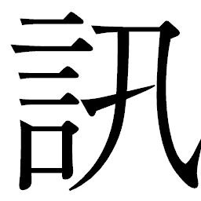
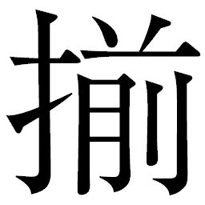

🏠
日
月
縦書き／横書き
 るような声が風に乗って聞こえてきた。
るような声が風に乗って聞こえてきた。
| 〔小説〕SAMURAI7 第三巻 | |
| 冨岡淳広 | |
この本は縦書きでレイアウトされています。
また、ご覧になる機種により、表示の差が認められることがあります。
制作協力......株式会社ゴンゾ 笠間寿高
企画協力......深谷精一
第九章 蘇る！
はじめから、キクチヨは戦力外とされていた。
昇降列車の爆発を最後に、キクチヨの姿は見えなくなった。
生きているのか、死んでいるのか。あの距離ならば無理をして爆発跡まで行き、安否を確かめることも出来た。しかしカンベエは、振り返ることを拒んだ。前に進み続けた。
カンべエの選択は、カンナ村を野伏せりから守るという義のもとに集まったサムライたち、そして百姓たちそれぞれに、深い影を落とすことになった。
ゴロベエには、既視感のある光景だった。同胞が斃
れても、進むのが戦
場
だ。
ヘイハチには、苦い記憶を呼び覚ますものだった。戦場を知る者としてゴロベエが感じたものと近いものではあったが、自分を責めてやまない悪夢が蘇ってくる。
受け止め方は対照的ではあったが、ゴロベエとヘイハチにとって、この選択は至極真っ当なものではあった。カンベエと共に行くと決めてからは、彼らにとっては一分一秒の全てが戦場での出来事と捉
えられるからである。
カツシロウは、自分ならどうするだろうと考えていた。自分なら、間違いなくキクチヨの安否を確認にいっただろう。だがそれは、カンベエには甘さと映るかもしれない。
サムライとは、なんだ――。
答えであるはずのカンベエの背を、カツシロウはどこか納得しきれない。
同じようにカンベエの背を見るキララも、問いかけている。戦場の匂いを感じとり、村を託すに足ると信じた男の背が、妹の悲しみを膨らませている。カンベエと過ごすようになって数日、キララは初めて、サムライとの隔たりを感じている。
リキチはカンベエという男がますますわからなくなっていた。敵を誘い、味方を見捨てる。わからない......。わだかまりは大きく広がっていく。キララの振り子が告げたこの男より、カツシロウやキクチヨのように話を聞いただけで素直に力を貸してくれるサムライの方が、信用がおける。やはり、ふさぎこんだままのコマチを見ているのが辛くもあった。
コマチは握り飯を見るたびにキクチヨを思い出すのか、泣き続けた。キララが手をつないでいなければ、今にも「おっちゃまを探しに行く！」と駆け戻ってしまいそうだった。
最下層への逃避行は重苦しい空気の中で続いた。カンベエは何も言わない。
「けじめをつける」と、キクチヨは言った。昇降列車が爆発する最後の最後まで、キクチヨは刀をふるい、カンベエたちが少しでもカンナ村に近づけるように、かむろ衆や鋼筒
と戦い続けた。コマチに蹴られた足に痛みはない。しかし、時折背中で聞く少女の嗚咽
は、カンベエの心に重苦しい痛みを刻みこんだ。
「なァに、地獄からも弾かれそうな男よ。某
は、あの男が死んでない方に ける」
ける」
ける」 ゴロベエが頰の傷を歪
めて豪快に言い放つと、ヘイハチもしみじみと言った。
「コマチ坊、私も、きっとキクチヨ殿にはまた会えると思いますよ。あの人がいないと、どうにも寂しくていけません」
寂しい、という言葉はヘイハチの本音だった。コマチは黙ったまま、こくん、と頷
くだけだった。ヘイハチの気遣いがうれしくて、キララはヘイハチに頭を下げた。
停車場から最下層へ、未開発の階層や裏通りをいくつも降りながら、一行は「癒
しの里」へと向かっている。次第に、もっとも明かりの集中するエリアが見えてきた。
◎
カンベエたちが最下層を目指している間にも、かむろ衆によるサムライ狩りは続々と成果を上げていた。
浪人を主な労働力としていた飯場では人足不足が叫ばれたが、気位ばかりが高いサムライに代わって半ば強制的に仕事に就かされたのは、路傍にごろごろしていた宿無しの連中だった。結果的に、街はすっかり掃除された。一方では街の衆に、「どこかにサムライが隠れているのでは」という不安感が漂っているのも事実であり、虹
雅
峡
は歪
な空気に支配されていた。
沙汰を待つアヤマロはまんじりともせず、かむろ衆の取り調べ報告を聞いてもうわの空だった。
緊迫の度合いを深めるアヤマロと打って代わって、ウキョウはまるで関係ないとばかり、新しい浮舟邸の設計で大工と相談する他は閨
に篭
りきりだ。
その夜、閨に、テッサイは一振りの短刀を持ってきた。真新しい白木の柄
と
は目に眩しいほどで、木の香りが立ち昇るようだった。
そのとき、ウキョウは御
側
女
衆
に手足のマッサージをさせながら夢心地でいたが、テッサイが三方に短刀を載せて持って入ってきた途端、瞳の色が変わった。
「出来たんだね」
と、さっそく手にとり、
から無造作に抜き出した。
それは、カツシロウが襲撃してきたときにテッサイが叩き折った刀身だった。ウキョウはあの日、折れた刀身を地面から引き抜くと、短刀として使えるようにしてくれとテッサイに頼んでいたのだった。
「よいねえ。きれいだねえ。刀って、いいよねえ。目が離せないものねえ」
「若......、そんなものを、いったい何に使うおつもりで」
「護身用だよ、護身用」
ウキョウは、蝋燭
の灯りを反射する刀身をうっとりと見つめていた。
「されば刀でも鉄砲でも、いかようにも御用意致しましたものを」
「ううん、これがよかったんだ」
テッサイは、また自分の理解できない一面が現われた、とウキョウの横顔を見ていた。護身用という言葉を素直に聞けない自分がいた。
「ねえ、キララクンたちどうなってる？ 見つかった？」
「いえ、昇降列車で逃走をはかって以降の足取りはまったくつかめておりません。ただ、第一層から始まったサムライ狩りを逃れて下層に逃れたことは必至。されば行き着くところは最下層の『癒しの里』とも考えられます。それゆえ、既にかむろ衆一班を癒しの里に派遣いたしました」
「ああ、懐かしいところだねえ」
ウキョウは思案する。目の前で催眠術でもかけようとするかのように、抜き身を左右にぶらぶらと揺らし、その動きを目で追っていた。
「よし、決めた。僕も行くよ」
「若が？ 何故
で」
「何度も言わせないでよ。キララクンが欲しいからなんだってば。あの子もね、百姓なんかやめたいはずなんだ。でなきゃこんな街場に来るわけないよ。僕は背中を押してあげたいだけだよ」
「しかしながらこの折には、あまりな身勝手は慎まれるべきかと」
「父上に言えばいいだろ。だいたい、癒しの里なんかにキララクンが行って悪い男に されたらどうするの。僕はキララクンを助けに行くんだよねえ」
されたらどうするの。僕はキララクンを助けに行くんだよねえ」
されたらどうするの。僕はキララクンを助けに行くんだよねえ」 この執着ぶりはなんなのだ、とテッサイは薄ら寒く思いながら、寝台を降りたウキョウの支度のために閨を出た。
勅使殺害後、アヤマロはことあるごとに茶の湯をたてていた。気持ちを落ち着かせようとしているのか、以前は一代で財を成
した自尊心の裏返しからか、寝首をかかれるのを畏
れ一人になるのを怖がっていたが、今は逆だ。
テッサイはアヤマロに、癒しの里へ行く許可を得ようと茶室の躙
口
を開けた。
癒しの里に行くことにアヤマロは眉を曇らせた。
「アキンドに むく者がまだ潜んでいるかもしれないのに、なぜか」
むく者がまだ潜んでいるかもしれないのに、なぜか」
むく者がまだ潜んでいるかもしれないのに、なぜか」 とあからさまに不快な顔をする。
「なればこそ、とも思いますが」
テッサイは素直に、己の考えを口にした。
「御前より、若がかつて百姓だと聞いたからやもしれませんが...... ここ数日、若と行動を共にしておりますと、合点のゆかぬことが多々ございます。癒しの里に例の百姓の娘を求めてゆくのは口実、なにか若には、我らの窺
い知れぬ何かがあるような気がしてなりませぬ」
「そちは、あれを泳がそうというのか？」
「そうなります。若が何を考え、何を求めているのか、見極めたいのです。それには出来るだけ、やりたいようにやらせてみるのも手かと」
「わかった。ウキョウのことはそちに任す。余は、都よりの沙汰を待つ身ゆえ動けぬからのう......。だがな、余の命令はまだ生きておるぞ。百姓も機械のサムライも、斬れ。ウキョウがどう騒ごうとも、斬るのじゃ。あれには、余からようよう言い聞かせるゆえ、よいな。励め」
テッサイはアヤマロに一礼すると、茶室を出た。
既に事前にかむろ衆に待機を告げていたこともあり、出動しようと回廊を足早に歩くテッサイにヒョーゴが歩みよってきた。
「テッサイ殿。癒しの里に行かれると聞いたが」
「いかにも」
「あの男が一緒なのであろう。俺も連れていってくれ」
ヒョーゴが言う「あの男」とは、カンベエのことか、とテッサイは察した。テッサイはいまもってカンベエなる男に会ったことはない。ヒョーゴとキュウゾウに「共に村へ行かないか」と声をかけた男。会ってみたい気がした。
「奴ともう一度、勝負したい。あのような手を使う男なれば、この俺にだってやり方はある」
話しているうちに高揚してきたのか、ヒョーゴの声はうわずっていた。
「御前はどうする」
「話をつける。おぬしたちは即刻発
ってくれ。俺はキュウゾウも連れていく。どうだ、癒しの里の大門で落ち合うというのは」
「よかろう。おぬしらが来てくれれば心強い。しかし癒しの里では刀は御法度
、無用の騒ぎは起こしたくない。それでもよいか？」
「構わぬ」
ヒョーゴは不敵な笑みを浮かべると、踵
を返した。
テッサイは大きく長く嘆息
した。百姓が虹雅峡に来てから、何もかもが乱れているような気がする。胸には大きな不安が根差し、何事も起きなければよいがと煩悶
するのだった。
◎
浮世の憂さを晴らす街、「癒しの里」。
戦中、それらしいものはあったが、色街として成立したのは戦後間もなくのことだ。
爆心地跡の軍需工場がアキンドに払い下げられたとき、真っ先に入札したのがアヤマロだった。そのアヤマロの肝 りで人足が集められ、街へと整備されていったのだが、男たちは千差万別。サムライ崩れもいれば、行き場のないただの宿無しもいる。人足同士のトラブルも多発する。癒しの里はそんな人足たちのガス抜きのために作られたのだ。
りで人足が集められ、街へと整備されていったのだが、男たちは千差万別。サムライ崩れもいれば、行き場のないただの宿無しもいる。人足同士のトラブルも多発する。癒しの里はそんな人足たちのガス抜きのために作られたのだ。
りで人足が集められ、街へと整備されていったのだが、男たちは千差万別。サムライ崩れもいれば、行き場のないただの宿無しもいる。人足同士のトラブルも多発する。癒しの里はそんな人足たちのガス抜きのために作られたのだ。 工事の間中、男たちは夜になると日銭を握りしめて色街を徘徊
するようになった。今も残る、街の入り口の大門と高い塀は、当時の人足たちや女たちを逃がさないためのものだという。通いつめているうちに惚れあって、逃げ出そうとする者が後を絶たなかったのだ。
街の規模は、上層で組主たちが支配する大店
クラスの階層に匹敵する。長大な爆心地の下層に位置するため、他の階層に比べて太陽が真上に来ると直接の照射を浴びる地理状況だ。それでも、上層の橋や電線が幾重にも光を遮るため、日照時間は少ない。最下層に住む人々は、仕事の比較的暇な昼間は、そのわずかな日照時間を求めて日なたぼっこしながら、夜を待つのだった。
この街では目立つことが美徳とされた。建物も電飾も趣向をこらし、人目を引こうと華やかさを競う。原色が惜しみなく使われ、極彩色の着物をまとい、訪れた者の目を酔わせる。男も、女も、この街に一歩足を踏み入れれば、一夜の夢を買うのに大枚をはたくことを惜しむ者はいない。
十年で急成長を遂げた街であることと、扱う商品が特異なだけに、独自のルールも増えた。刀を御法度としているのもその一つだ。とはいえ、刀をサムライの矜
持
と言って憚
らない連中のことを慮
って持ち込むことは認められている。御法度なのは抜刀だ。
男と女の切った張ったに本物の武器はいらない。トラブル解決のための地回りも自然に生まれ、大小百あまりの店は遊廓
や湯屋の他に料亭もあれば矢場もあり、
博
場
もある。あらゆる遊びが、その街にはあった。
博
場
もある。あらゆる遊びが、その街にはあった。 こうして夜毎
絢
を競う癒しの里の中で、多くの客から支持されている料亭兼置屋がある。
その名を、「蛍屋」という。
地下水脈が作る堀に囲まれたように建てられた五階建ての店は、他の店にくらべて原色も少なく、比較的地味な印象を与える。それでも客足が途絶えないのは、ひとえにこの店を切り盛りする女将
のおかげ、というのがもっぱらの評判だ。
色街にあって頑固
に料理人の作りだす味だけを売り物にしているところも、趣味に金を使う者が増えたアキンドの時代に見事にハマった。趣味人たちは女将と、女将に鍛えられた芸妓
たちとのおしゃべりや、旬の食材で贅
をこらした料理に舌鼓
を打つために大枚をはたいてくれる。
今宵も蛍屋は盛況だ。中央に小さな庭園をしつらえた吹き抜けを囲むように階を重ねた十以上の座敷は全て予約で埋まり、開け放たれた窓からは賑やかなお囃子
の音色や太鼓持ちの掛け声が外にまで漏れ聞こえてくる。
その太鼓持ちはシチロージと名乗った。色白な細面に刻んだ莞爾
な笑みはどこか皮肉めいていて、どんなに楽しげな座敷であろうと、酔いもしなければ乱れもしない。ひたすらに客が満足出来るように盛り上げ、ごまをすり、あおった。粋に染め上げた薄紫の羽織は、実は女物。三つの角のように結んだ器用な髷
が特徴の色男は、今夜も芸妓と共に派手に騒ぎ、料理と酒の味を高めるのに一役買っていた。
「さあッ、アキナイ音頭と参りましょう！ 麗
らかな娘たちが柔肌を見せてくれるか、このアタシのハトムネが出るか、まずはご覧あそばして！」
シチロージの威勢のいい声に、華やいだ声で可愛らしい芸妓たちが客のアキンドたちのそばから離れ、シチロージの横に並んだ。
猪口
の酒をあおりながら、アキンドの旦那
方は娘たちから目を離せない。この一行は上層の組主
衆であった。お囃子にのって、シチロージと芸妓たちのアキナイ音頭と呼ばれる座敷唄がはじまった。
アキナイするなら
こういう具合にしやしゃんせ
仕入れたら こう売って
売れたなら また仕入れ
お得意様には 最敬礼！
前掛け！ 算盤
！ よよいのよい！
最後にシチロージと芸妓たちがじゃんけんを決めると、負けたのは芸妓たち。
「あららら、こりゃまたえらいコトですよ！ 乙女たちみーんな負けちゃった！ さァさ、脱いだ脱いだ！」
シチロージは手拍子を交えてあおった。たちまち、旦那衆も手拍子を合わせた。既にほろ酔い気分の旦那衆は、芸妓たちが帯を解いて襦袢
姿になると、さらに酒が進んだようだ。
「ようし、次はあたしにやらせてくれッ！」
アキンドの一人が目を血走らせて立ち上がったとき、いきなり障子が開いて座敷に浪人者が肩をいからせて入ってきた。
お囃子も嬌声
も、何もかもがとまった。遊技の場に突如闖入
してきた異質なもの――サムライに、皆驚きのあまり酔いは一瞬のうちに吹っ飛んでいた。
「じゃかましいわい、アキンドどもめッ！ 上じゃ朋輩
がサムライ狩りの憂き目にあっているというのに、お前らはなんだッ！ 湯水のように金を使って、俺達は、お前らが遊ぶために戦
をしていたんではないわッ！」
酔いも手伝って、浪人はいきなり抜刀した。芸妓たちもアキンドたちも悲鳴をあげて、部屋の隅ににじりよった。悲鳴に刺激されたのか、浪人は刀を振り上げた。
しかし、動きはそこまでだった。振り上げた拍子に切っ先は下を向く。そこを、つまんだ鈍色
の左手。シチロージの左腕は、肘
から先が義手だった。
「ぬううっ、離せ、太鼓持ち風情がッ！」
「まァまァ、お客さん、鴬
の間のお客さんでげしょ。いけませんや、癒しの里で刀は御法度、楽しく飲んで浮世を忘れましょ。一歩ここに入ったら、おサムライもアキンドもありゃしやせんぜ」
浪人は長身のシチロージも見上げるような大男だ。顔を真っ赤にして鼻息荒く、シチロージの指から刀を離そうと力を込めているのだが、ビクともしない。対してシチロージはまるで涼しい顔だ。
「黙れ！ 拙者を誰と心得る！ 南軍の猛将シンゲン公が人面砦を攻めた折、三番槍
の功名を立てし武士
ぞ！ それが、このような不遇をかこつは全てアキンドのせいだ！ 太鼓持ち、貴様も邪魔だてすれば叩っ斬る！」
「ん～、それは勘弁」
シチロージはパッと指を離した。すると浪人は勢いあまってたたらを踏んだ。
「おのれ、無礼者！」
激昂
した浪人はシチロージに斬りかかってきた。
シチロージには見切ることさえもどかしいほど無駄の多い、遅い動きだ。体を泳がせて切っ先をやりすごすと、浪人の腕をとって座敷から廊下に引きずり出し、吹き抜けの手すりから身を乗り出させる。ここは二階、真下は庭だ。
「野暮はよしましょうや。元和偃武
よりこっち、サムライなんざァ流
行
らねェ」
「太鼓持ちごときに、サムライの心がわかってたまるか！」
唾をとばして吼える浪人から刀を奪い、シチロージは尻を蹴った。刹那
、彼の表情に微かな曇りが浮かんだことに気づいた者は誰もいない。
浪人は真っ逆さまに庭の池に落ちた。
「ええいッ、降りてこい！」
頭から水に濡れた浪人はシチロージに吼
え続ける。
「あいよ」
シチロージは刀を手に、ひらりと飛び降りた。
「よしなよ、サムライ狩りに捕まらねェうちに出ていくこった。でなきゃいつまでもこんなものにこだわってるこたぁねえ、やめちまえ！」
啖呵
を切ったシチロージは、微笑
みを浮かべながらも目は笑っていなかった。異様な怒気が、その白磁のような顔に浮かんでいるのを見てとった浪人者は、シチロージが投げた刀を腰に差すと、「おぼえておれ！」の捨
て台詞
を残してそそくさと出ていった。
「お客さんのお帰りだよ！ おありがとうござァい！」
シチロージがこの騒ぎをおさめた場面は、ちょっとした見世物となった。吹き抜けの手すりから身を乗りだして見ていた酔客たちが、彼に万雷の拍手を浴びせる。
客たちに手を振って応えるシチロージを、庭先に出てきた艶
やかな美女が軽く睨
んでいた。シチロージは彼女と目線を合わせた途端、商売人として大事なことを思いだした。
「あ痛ぁーっ、お代お代！」
この店に来てから癖になった、困ったことがあると頭に手をやる仕草
を見せて、シチロージはカラリと顔をしかめてみせた。
オチがついて、客たちの間からさらに笑いが起こった。
艶然
とシチロージに微笑みかけた美女の名はユキノ。蛍屋の女将である。光沢
眩
い黒髪と乳白の肌が見る者を惹きつけ、立ち居振る舞いの一つひとつが絵になった。
もとは癒しの里でも一、二を争う花魁
だったが、さる大店の旦那から、是非にと乞われて身請けされて、任された料亭が蛍屋だった。
しかし、身請けされてほどなく旦那は病没。蛍屋だけが残った。ユキノは一人で店を盛り立てていった。遊女だった時代から同性にも異性にも愛されたユキノのもとに、一人、二人と彼女を慕って、年季の明けた娘たちが集まり、芸妓の躾
を受けていった。ユキノは踊りや花、茶など一とおりの芸を身につけており、それらを娘たちに教えていったのである。
またユキノは、行き場をなくした者の受け皿にもなっていった。仕事にあぶれた者にはどんな細かいことでも仕事を与え、褒めそやし、自信を与えて、一人前に育てあげていく。ユキノに目をかけられ、店を巣立って他所
で名を上げている者も少なくない。そのため、癒しの里では決して揶揄
する意味ではなく、褒め言葉として「拾い屋のユキノ」という渾名
までついてしまったほどである。
蛍屋が今あるのは、亡くなった旦那と自分を慕ってくれた娘たちや料理人たちのおかげ。ユキノは感謝の念を欠かさない。その彼女の独りの日々に終止符を打ったのが、シチロージだった。
騒動が終わって、数刻後。
もっとも客足が集中する時間が終わって、店もほっと一息つける時間帯だ。
使用人たちはいつも、後片づけは自分たちがやるから、とユキノにシチロージと過ごせる時間を作ってくれた。きちんと二人分の食事が用意され、いち早く掃除された座敷で、二人は遅い夕餉
をとる。そんな毎日だった。
銚子の酒が、尽きたようだ。シチロージは逆さに振って、落ちてきた雫を舌で受けとめた。
そのおどけた仕草に、ユキノは笑って、そばに置かれた徳利を手にした。
「お前さん、そんなことしなくてももう一本あるんだから」
「なァに、身についた貧乏性ってヤツだァね」
シチロージはそう言って、小鉢の肴
を口に運んだ。
「ん～、うまい。鱧
か」
「戦車が淵でいいのがとれたから」
「ウン、これはうまい。誰の味つけだい？」
「二番板のトクさんですよ」
「ああ、あの大将か。あっという間に一番板を越すよ。アタシのお墨付き」
「伝えておくよ」
ユキノの はすすまない。シチロージは彼女の視線を意識して、目を上げた。
はすすまない。シチロージは彼女の視線を意識して、目を上げた。
はすすまない。シチロージは彼女の視線を意識して、目を上げた。「どうした？ 食べないのか」
「もう、あんな無茶はいやだよ」
「......あの浪人か。今までもこんなこと、何度もあったじゃないか」
どこからまぎれこんだのか、蛍が二匹、まぎれこんできた。番
だ。淡い碧
の光は雄
、青い光は雌
である。幻惑するような輝きを放ちながら、二匹は漂うように二人の間を飛び、ユキノが仕立てた生け花に止まった。
蛍屋は水場が近いこともあって、蛍がよく見られる。深い地層がそうさせるのか、季節を問わず年中蛍が見られるのだ。中庭にも蛍が乱れ飛び、この光景は蛍屋の名物の一つにもなっている。
「蛍......」
ユキノは蛍の光を見つめた。儚
い、碧と青の溶け合った輝きに目を細めた。
「つまらねえ見栄張りやがって......。こんな時代、サムライなんざ用心棒か野伏せりに身を落とすしかねえのさ」
シチロージは空になった猪口を手の中で弄
びながら、吐き捨てるように呟いた。その猪口に、ユキノは酒を注いだ。
「自分だって......、サムライのくせに」
ユキノの声には、咎
めるような響きがあった。
彼女が裏の堀で「拾った」ときは、生命維持装置に入って冬眠状態だったシチロージ。目覚めてから、かれこれ五年が経つ。世の中のかわりように驚き、サムライはもう、仕舞いだと言って愛用の槍
を片づけた。ユキノのもとに身を寄せて傷を癒し、座敷で太鼓持ちに徹してきた。遊廓は、時代をもっとも敏感に感じ取れる場所。お大臣遊びが出来るのは、その時々の支配階級だ。サムライが衰退していくさまをこの五年というもの、ずっと見てきたシチロージである。
「もう、やめた」
「嘘ばっかり、割り切れるもんか」
蛍が、生け花から離れた。部屋を舞う。シチロージもユキノも、ついその動きを目で追っていた。
ユキノは障子を開けて、蛍を外に逃がしてやる。
そのまま開け放して外の景色を見ながら、彼女はシチロージの隣に寄り添った。肩にしなだれかかると、彼の鼓動が微
かに伝わってきた。
「蛍ってのは、子供のとき、水の中でブイブイ言わせるって言うんじゃねえか」
「あい、ムシをガツガツ らうとか」
らうとか」
らうとか」「大人になれば静かなもんよ」
「おや、そうかしら。さっきの御浪人さんとやりあったときのアンタは、ずいぶん楽しそうだったけど？」
「楽しいもんかね。あんな情けないサムライばかりじゃ寂しいもんよ......。アタシは、もうずっと太鼓持ちの居残りさ」
「あたしに借りがあるなんて、もう思わなくてもいいんだよ」
シチロージは「借り」という言葉に、自分の左手の義手を見た。
「そうはいかねえし、ここにいるのは借りだけじゃあねえ」
潤んだ瞳で見上げてくるユキノに、シチロージはそっとくちづけた。甘い紅の味が、シチロージの気持ちを痺
れさせる。
「憎らしい。本気にしちまうよ」
ユキノの手が彼の背中にまわったとき、不意に の向こうから声がした。
の向こうから声がした。
の向こうから声がした。「おかみさん、来て下さい。トクさんが裏のお堀で土
左
衛
門
を拾ったんですが」
拾い屋のユキノの精神は、店の者にも徹底しているようだ。土左衛門と聞いて、シチロージはいち早く立ち上がった。
二番板前のトクスケがその土左衛門に気づいたのは、裏の船着き場脇のゴミ捨て場に生ゴミを出しに来たときだった。堀を流れてくる戸板の上に、大きな機械のサムライが寝転がっているのを見て、引き寄せたのである。
岸に引き上げられた機械のサムライは、あちこち凹み、装甲は熱に歪み、全身傷だらけでピクリとも動かなかった。握りしめた大太刀は刃こぼれして、戦いの後をうかがわせた。駆けつけたシチロージが胸に手をあてると、体内からはかすかな駆動音が掌を通じて感じ取れた。
「生きてる」
赤い仮面に金の飾りと陣羽織。その土左衛門は、キクチヨだった。
シチロージが装甲を軽く叩くと、キクチヨの意識が戻り、ゴーグルが開いた。
「おい......ここは......、癒しの里か......？」
弱々しい声にノイズが混じっていた。
「ああ。癒しの里だ」
「あんた、頼まれてくれねえか。この街に、カンベエってサムライが来るんだ。いや、もう、どこかに来てるかもしれねえ」
「カンベエ......」
シチロージの表情がわずかに動いた。彼の記憶にあるカンベエと名乗るサムライは、ただ一人しかいない。
追って出てきたユキノも、その名に反応して表情が翳
った。
「そいつを、探してくれ。あいつに......会わなきゃ、なんねェ......」
そこまで言って、キクチヨは力尽きたのか気を失い、ゴーグルの奥の輝きも消えてしまった。シチロージは名前を聞こうと揺さぶってみたが、キクチヨはもう反応せず深い眠りに落ちていた。
カンベエたちが大門をくぐって癒しの里に入ったのは、夜も更けた時刻。ひとまず宿をとって、翌早朝の出立を、と考え宿を探すが、ここは遊び場、ただの旅籠
は見当たらない。癒しの里で泊まる者は、遊廓で一晩過ごすか、夜を徹して騒ぎ、一番鶏が鳴く頃に帰るかのどちらかしかない。
泣き疲れたコマチはリキチの背中で眠りこんでいた。まる一昼夜近く歩き詰めで、カツシロウやキララ、リキチの疲労は限界に達していた。それでもキララは、初めて見る色街を彩る、きらびやかで毒々しい「化粧」に目を奪われていた。本で読んだ廓話
から想像していたよりも、はるかに派手なのだ。
カツシロウも、お上
りさんそのものできょろきょろしながら歩いていた。睡魔は吹っ飛び、遊廓の赤い格子の向こうで客を待つ乙女たちに目のやり場に困った。
「ここは......、いったい何をするところなのですか」
武家屋敷育ちでこういう場をまったく知らず、教えてももらえなかったカツシロウから、自然と問いが口をついた。
「おや、カツシロウ君は知らないんですか」
ヘイハチがさも意外そうに声をあげると、ゴロベエは愉快そうに、
「初
は無理もなかろう。聞けばカツシロウは由緒正しいお家柄、このようなところにはとんと縁のない躾をなされてきたであろうからな」
「由緒正しい......、というほどのものではありませんが」
からかわれているようで、カツシロウの声には不服そうな色があった。
「まあ、きれいに言えばこういうことだ。羽目を外して唄い踊り、浮世の憂さを晴らす場所......」
謡いあげるように、ゴロベエは言った。
ピンときていないカツシロウに、キララが助け船を出した。
「私が読んだ本には心の洗濯場、というふうに書いてありましたよ」
「心の洗濯場？」
助け船は効果がなく、かえってカツシロウは混乱してしまったようだ。
「ええい面倒だ、どこでもいいから身をもって知ってこい！ 男になれるぞ！」
「ゴロベエ殿、何をなさいます！」
ゴロベエはカツシロウの襟首を豪快につかむと、カンベエにニヤリと笑いかけた。
「いかがかな、それぞれに適当に店に入って夜を明かしては。いずれにせよこのような場所で子供連れで固まっていては目立つことこのうえない」
「うむ......。旅籠も見当たらぬようだしな」
カンベエは思案顔で顎鬚
をなでた。
「カンベエ殿はリキチたちと。我らは三人で」
ゴロベエはヘイハチとカツシロウの肩をがっしり摑んで離さない。
「あ、私もですか......」
ヘイハチは苦笑いしているが、カツシロウは憮
然
としていた。
この状況さえ楽しもうというゴロベエのふてぶてしさが、カンベエには頼もしくあった。
「よかろう。明日の朝、大門そばの――」
カンベエが言いかけたときだった。
後ろを通りかかった上機嫌の酔客たちの会話が、彼らの耳に入ってきた。
「ユキノ姐さん、今度は土左衛門を拾ったそうだねえ」
「ああ、機械のサムライよ」
「さっき見てきたけどなあ、いくらなんでもありゃ蛍屋じゃ使いものになんねえだろ。なりはデカいし、あんなのがいたら料理がまずくなっちまうよ」
機械のサムライ、と聞いて、カンベエとゴロベエ、ヘイハチは視線を交わした。
「土左衛門......だそうですけど。らしいと言えばらしいような」
ヘイハチの含みをもった言い方に、カンベエも自然と表情が和らいだ。
「皆、同じことを考えたようだな」
ゴロベエがすかさず、酔客たちに声をかけた。
「もし。つかぬことを聞くが、土左衛門があがったという店、なんと言った？」
頰に深い傷痕を残すゴロベエのいかつい顔と野太い声に、酔客たちは地回りとでも勘違いしたのか急に恐縮した様子で、蛍屋の場所や店構えを事細かに教えてくれた。
リキチの背で眠っているコマチに、笑顔が戻るかどうか。一行は自ずと急ぎ足になっていた。
蛍屋はすぐにわかった。まわりが派手な分、落ち着いた意匠で組み上げられた五層の建物は逆に目立つのだ。
暖 をくぐったカンベエたちに先に気づいたのは、ちょうど玄関先を通りかかったユキノだった。
をくぐったカンベエたちに先に気づいたのは、ちょうど玄関先を通りかかったユキノだった。
をくぐったカンベエたちに先に気づいたのは、ちょうど玄関先を通りかかったユキノだった。「おや......、いらっしゃいませ」
優美に一礼するユキノの仕草は粋で、若いカツシロウは瞬
きするのも忘れて、その美しさに魅入
っていた。顔を上げたユキノは、「さ、どうぞ」とあがるように勧め、店の奥に声をかけた。
「誰か、お客様ですよ。御案内を」
「いや、それには及ばん。少々ものを
ねるが、こちらに機械のサムライが世話になっていると......」
言いかけたカンベエは、奥から出てきたシチロージを見て絶句した。
シチロージも、信じられないものを見たかのように立ちすくんだ。
イツモフタリデ。
戦
場
の空の記憶が二人の間に鮮やかに蘇った。
シチロージは上がり框
に膝
をつくと、カンベエに深々と頭を下げた。
「カンベエ様。御無沙汰いたしておりました」
「シチロージ......」
カンベエは目を細め、懐かしい友の顔を見つめた。床についた左手が義手に変わっていることに気づいたが、端麗な顔は時を感じさせず若々しかった。
ユキノはつい今しがた名前の出た男が、思わぬ形でシチロージと再会したことに複雑な思いを抱えていた。この五年、心の奥底に仕舞い込んでいた不安が一気に噴きだし、激しい胸騒ぎに心が波立った。
「変わりないか」
「はい。このとおりです。カンベエ様も、お元気そうで」
シチロージからも、笑みがこぼれた。二度と会えぬと思っていた二人だ。互いに、最後の戦闘のさなか生き別れになり、互いを死んだと思っていた。
「カンベエ殿、この方は......」
ゴロベエが
ねると、カンベエはシチロージを皆に紹介した。
「この者はシチロージ。儂
とは、長年戦
で苦楽を共にしてきた、古女房ともいえる男だ」
「お初にお目に。シチロージと申します」
シチロージはゴロベエたちにも一礼した。
「さあさ、こんなところで立ち話もナンですよ。お前さん、つもる話もあるでしょう、皆さんをお座敷にお通ししてくださいな」
ユキノに促され、シチロージは「あ痛タ、これはとんだ失礼を」といつもの調子に戻った。シチロージの仕草、ユキノとの雰囲気から、カンベエは十年の時間を察した。
「カンベエ様、これはユキノ。この蛍屋の女将です」
「ほう、内儀
をもったのか」
「いやですよ、そんなんじゃありません」
ユキノはシチロージに寄り添いながら答えた。
「なんというか......、くされ緑ですよ、旦那。そうだ、ときにお前さん、こちら様は機械のおサムライのことを......」
「うむ、なにやら土左衛門があがったのをこちらで預かっていると聞いたのだが......。もしやその機械のサムライ、名はキクチヨというのではないか？」
「さて、名乗る前に気を失ってしまったのでそこまでは。それでもあの男、私に人を探してくれとは言いました。そのお人とはカンベエ様、あなたです」
カンベエは玄関をあがりながら、カンナ村への道中にこの再会を導いたのがキクチヨだったという事実に、キクチヨと自分たちとの奇異な縁
を思った。
シチロージに案内されて、カンベエたちはキクチヨが休んでいる座敷へと通された。キクチヨは未だに気絶したままで、布団の上で大の字になっていた。
「キクチヨ......。お前が、シチロージに引き合わせてくれたのだな......」
カンベエは右手の手袋をとると、キクチヨの胸の装甲板に手をあてて機動音を伝え聞こうとした。カンベエの右手の甲には六枚の花弁を模した刺青があり、これを見たシチロージの目が寂しげに曇った。自分の左の義手を、つい羽織の袖の中に隠して言った。
「生きてはいるようですがね。中の機動音はかなり弱まっています。生体部分の維持が出来なければ、このまま二度と起きない可能性もありますよ......。ここらじゃ機械のサムライを診てくれるような医者もいませんしねえ」
シチロージが言い添えると、ゴロベエも呟いた。
「殺しても死なない男だとは思っていたが......」
昇降列車の爆発による衝撃波や熱量は相当なものだったことがわかる。発見時の状態や、シチロージに必死にカンベエを探すように頼んだことなどを聞いて、よくぞ生きてここまで来た、と誰もがその執念に舌をまいていた。
「キクチヨ様は、サムライだ」
おぶったコマチをキクチヨの隣に敷いた布団におろして、リキチが呟いた。
皆、同じ気持ちだ。こうまでしてカンナ村へ行こうとするキクチヨの侠
気
には頭が下がる。
「カンベエ様......、なして、キクチヨ様をサムライの数に入れねえだ」
「私もそう思います、先生。キクチヨ殿は私たちの誰よりも、カンナ村を守ろうとしています」
カツシロウが同調して言うと、援軍の言葉に勢いづいたリキチがカンベエにさらに詰め寄り、「カンベエ様！」と呼びかけた。
だが、カンベエの答えは二人の怒りを悠々とかわすものだった。
「いずれ、キクチヨの口から聞くがいい」
リキチにはカンベエの返答は かけにしか聞こえなかった。
かけにしか聞こえなかった。
かけにしか聞こえなかった。 皆、口には出さないが、この旅と戦いに、キクチヨはもはや必要不可欠な男だった。それでもカンベエは、キクチヨをサムライとは認めない。
彼はキクチヨの本音を待っていた。眠るキクチヨのそばに膝をつき、いたわるように胸の装甲板に手を乗せながら、カンベエは静かに心の中で問いかけていた。
――おぬし、なぜサムライでなければならなかったのだ？
肝心なことには何も答えないカンベエがリキチには許せず、声を荒げてつっかかった。
「キクチヨ様はこんなになるまで俺たちのために戦ってくれてるだ！ 認めてやったらどうだ！」
「やめてください、リキチさん」
キララがリキチを止めようと身を乗りだした、そのとき。
突然、むくっ、とコマチが起きた。珍しく激昂したリキチの声に眠りを妨げられたのか、寝ぼけ眼をこすって辺りを見回す。
「コマチ......、ごめんなさい、起こしてしまいましたね」
キララはコマチの背に手を添え、もう一度横にしようとした。ところがコマチは、隣で眠るキクチヨに気づいた途端、それまで半開きだった目を瞠
ってキクチヨの顔のそばににじりよった。
「おっちゃま！ うわぁっ、おっちゃまだ！ すごいすごいすごいです！ どうしておっちゃまがいるですか!?
」
完全に眠気の吹っ飛んだコマチが周りの大人たちに向ける瞳は輝いていたが、どんなに揺すっても起きないキクチヨに、その輝きは次第に曇り始めた。
「おっちゃま？ あれえ、寝てるですか？ おっちゃま、起きるですよ！」
「キクチヨ様はここに来るまでにとても疲れて、少し休んでいるだけですよ。ぐっすり眠ったら、また元気になります」
なだめるようにキララが言ったが、コマチはカンベエたちの表情からただならぬものを感じ取ったのか、不安にかられてキクチヨを激しく揺り動かした。
「おっちゃま。おっちゃまってば！ 起きるです！ 起きるですよー！」
コマチはビクともしないキクチヨの腹に馬乗りになり、大きな声を出しながら何度も胸を叩いた。
「起きろー！ おっちゃま起きろ！ 起きろったら起きろー！ やい、キぃーックぅーッチぃーッヨぉーッ!!
子分、起きろーっ！」
声と共に胸を力いっぱいコマチが叩いた途端、キクチヨの体からバシューッ!!
と噴気が始まった。軋
みをあげて可動部が動き出し、ゴーグルが開いて凄まじい閃光
を放ち、排気管からは部屋中にたちこめるほどの白煙が噴きだした。
キクチヨ、再起動！
「だぁーっ、やかましいーッ！ 寝てらンねェじゃねえかッ、チビッコ！」
腹に乗っていたコマチが転げ落ちる勢いで、キクチヨは体を起こした。真っ先にその目にとびこんできたのはカンベエだった。
「おおっ、カンベエじゃねえか！」
カンベエは笑みをみせ、立ち上がった。
「キクチヨ、今夜はしっかり養生するがよい。我らが無事に癒しの里に来れたのも、おぬしのおかげだ。感謝しておる」
「へっヘーんだ！ 当たり前だ、おめぇらオレ様がいないとダメなんだよ！」
「死にかけにしては元気がよいな」
「お米のおかげでしょう」
ゴロベエとヘイハチが妙に感心している後ろで、シチロージとユキノも互いに顔を見合わせて微笑みあっていた。
「現金な男よ。アタシらがどんなに声をかけても起きなかったのに」
「きっと、あの子じゃなくちゃだめだったんですよ」
キララはユキノとシチロージの暖かな言葉に感謝の会釈をすると、コマチに声をかけた。
「よかったですね、コマチ」
「ハイです！ おっちゃま起こしたのオラです、おっちゃま、もう一生オラに頭あがんないですよ」
「子分て呼ぶんじゃねー！ あァ、なんかハラヘったな」
「ほれ、これ食べるです」
コマチはヘイハチの
から握り飯を出すとキクチヨに差しだした。
「おう、気がきくな、チビっこ」
コマチの弾けるような笑顔と、握り飯を貪るキクチヨに、それまでのリキチとカツシロウの刺々
しい雰囲気は消えた。いかなる理屈がキクチヨの作動に影響したのかは知らないが、やはりこの男、一行になくてはならぬ存在なのだ。
第十章 癒す！
結局握り飯一つ食べて、キクチヨはまた眠ってしまった。豪快に鼾
をかいている横でコマチも安心して眠りこんだ。コマチが眠るのを待って座敷を出たキララが皆のいる座敷に入ると、ユキノがカンベエたちに料理を振る舞っているところだった。
「ちょうどよいところへ。お料理が並びましたよ。さ、こっちにお座りなさいな」
ユキノはキララを招いて、空いているカツシロウの隣に座らせた。
既に並べられている膳には尾頭つきの魚、色とりどりの小鉢には職人が巧みに作り上げた細工物のように目にもあでやかな料理が並んでいた。座ったキララは、料理を見て
を手にすることが出来なかった。
を手にすることが出来なかった。「どうしたのだ、キララ殿」
手をつけないキララに、カツシロウが
ねた。
「村のみんなが苦しいときに、私ばかりが贅沢
なんて......。村では尾頭つきなんて、年に一度、お祭りのときぐらいしか食べられないんです」
村のみんなに悪い......。そう言ってキララは、膝
にのせた拳を握りしめた。
先に食べていたリキチは、罰が悪そうに
を置いた。
を置いた。 ユキノがキララのそばに、自然な振る舞いで座った。
「気負ってばかりじゃ身が持ちませんよ」
「......ごめんなさい」
「いま、皆さんから聞きましたよ。あなたがおサムライを集めているのは、村のみんなにいつもおいしいものをおなかいっぱい食べてもらうためでしょう？ みんなが、当たり前にごはんを食べられるように......」
「はい......」
「あなた一人、そんなに難しい顔をしてたら、だめ。みんなのごはんが、おいしくなくなっちゃう」
「そうですね......」
キララはまた、自分を恥じた。いつも、余計な気遣いで自分を縛り、結果として苦い思いを残すだけ。ユキノの言うとおりだと思った。自分の言葉で、座が白けてしまったのだ。キララは
をとって、椀を手にした。
をとって、椀を手にした。「いただきます」
「そう。それでいいのよ。ごはんは楽しく食べなくちゃ」
ユキノの微笑
みは暖かかった。
キララは汁物をすすり、小鉢の煮物をつまんだ。
「おいしい......」
村では食べえない味だった。すかさず、ヘイハチがうれしそうに口をはさんだ。
「ね。おいしいでしょう。これは使っている水がいい証拠。素材もいいし、味つけもいい。これを食べなきゃ、損ですよ」
「ほんとうに......」
「お褒めいただき、ありがとうございます。ヘイハチ様。うちの板前たちも喜びますよ」
自分のことのように喜んで、ユキノは笑みをヘイハチに向けた。キララはその微笑みを眩しく見つめていた。村の女たちにはない、街の大人の女がそこにいた。
艶
やかで細やかに気配りし、それでいて客それぞれを立て、誰に対しても安心できる笑顔を持ち続けられるユキノに、キララは憧れを抱いた。
「いやあ、こんなに美味いものを毎日食べられるシチロージ殿は幸せものよ。このように美しい女
御
とくされ縁というのもまた、羨
やましい限り......。よければ一つ、なれそめを聞いてみたいものだ。カンベエ殿も古女房と別れてからのこの十年、知りたいのではないかな？」
ゴロベエは舌鼓を打ちつつ、カンベエを見た。
カンベエは静かに猪
口
を口に運びつつ、シチロージを見やった。
「正しくは十年ではないんでさ。ここに腰を落ち着けてかれこれ五年になります」
シチロージはカンベエを見て、言った。
「実は、川で拾ったんですよ、この人を。それが五年前......」
ユキノはシチロージに寄り添って、言葉を紡
いだ。
「どこをどう流れてきたのか、この人が入った冬眠装置が裏の堀に流れてきたんですよ。店の人たちに手伝ってもらって引き上げて......」
「気がつけば五年も冬眠していたというわけでして。以来ここに御厄介
に」
シチロージは当時を思いだすのか、懐かしげに目を泳がせた。
「川で拾ったとは、まるで桃太郎ですね」
ヘイハチが楽しそうに言うと、ユキノも小さく笑って、頷
いた。
「ええ、本当にそのとおり。桃に入ってどんぶらこ、どんぶらこ、ってさ」
「カンベエ様」
シチロージの泳いだ視線は、カンベエに向けて定まった。
「アタシがこの五年、蛍を見て暮らしていたというのに、旦
那
の刀はまるで
びついてはいなかったようで」
「なに、融通がきかぬだけのこと」
旧友との再会が、カンベエの口をいつもよりも滑らかにしているようだった。
カツシロウも、キララも、カンベエのそんな穏やかな瞳を見るのは初めてのように思う。二人には、一つの疑問があった。ここにカンベエが信頼するサムライがいるというのに、なぜ声をかけないのか。ともに、村へ行かないか、と。そして若い二人からは声をかけられない何かが、二人の男の間には流れていた。
「ときに、癒しの里から外に逃れるにはどうすればよい」
カンベエはカツシロウたちの不安を裏付けるように、サムライ狩りからの脱出の算段をシチロージに訪ねた。
「追手をまくとすれば、禁足地
を使うのが一番です」
「禁足地？」
「カンベエ様は御存知ないですか。式杜人
の名を」
「いや......」
ゴロベエもヘイハチも、首をひねった。
「この先の地下洞窟に住む、キテレツな連中のことです。アヤマロとの協定で、式杜人はこちらの世界に入ってこれない決まり。とはいえ、地下洞窟に探りに入った者も多いと聞きます。そしてその連中は行ったきり、二度と戻ってこないとか......。なんでも式杜人の世界に一歩踏み込んだら最後、命の保証は出来ないとまで言われております。それゆえ、アヤマロは禁足地としたともっぱらの話で」
シチロージの淡々とした話に、ヘイハチはぞっと身震いした。
「何者なんでしょうね、式杜人って」
「さて、アタシも見たことがありませんから。怖い怖いと ばっかりが独り歩きしてるようにも思いますがね」
ばっかりが独り歩きしてるようにも思いますがね」
ばっかりが独り歩きしてるようにも思いますがね」「使えるな」
カンベエは断じた。
「アヤマロと禁足の協定があるならば好都合だ」
「
は気にならないので？」
は気にならないので？」 そう
ねるゴロベエは、どこか楽しそうだ。
「
であろう？」
であろう？」 鬚をなでながら、カンベエはゴロベエに不敵に笑いかけた。
「ほんとに、大丈夫だか......」
不安そうなリキチにゴロベエは、安心させるように大きく笑みを見せた。
ユキノは気を遣って、カンベエとシチロージのために銚子を一本つけ、座敷の一つをとった。カンベエは友と語らう時間をとりはからってくれたユキノに感謝しつつ、徳利を傾けた。
シチロージはここに来てから覚えたという三味線をつまびいていた。
開け放した障子から見下ろせば、中庭に飛ぶ蛍が見える。
まさに浮世を忘れる場所にふさわしい景観だった。この穏やかな夜の中で、五年――。
三味線の弦を緩やかに弾くシチロージの白い指と、自分の節くれ立った浅黒い指を見比べたカンベエは、五年という時間に感じ入っていた。
幽
かな音色に導かれるように蛍が舞い、カンベエとシチロージの間を光の残像を漂わせながら飛んでいった。
シチロージは不意に弦をとめ、指でおさえて余韻を断ちきった。
猪口を口に運んだカンベエも、その動きをとめて目を閉じた。シチロージが何を言わんとしているのか察しながら、あえてカンベエは無言のままでいた。
「なぜ、私には言ってくれないのですか。野伏せりと戦ってくれと」
カツシロウとキララが抱いていたのと同じ思いを口にしながら、シチロージはカンべエの返答がどんなものか、わかっていた。それでも口にせずにはいられなかった。
「儂
らが求めているのは、腹のすいてるサムライでな」
シチロージは、苦笑した。相変わらず狡
い切り返しをしてくるものだ、と。ならば、とシチロージは皮肉で返した。
「お優しい答えですな」
「おぬしはいつも、儂のことをそう言うな。儂のどこが優しい」
「優しいと一口に言っても千差万別。裏の意味もありますよ......。カンべエ様は、ユキノに気を遣っておいでなんですね」
「そう、なるかな」
「あれは、いい女です。あの暖かさは私なんかには勿体
ない。あれと一緒にいると、もうサムライは中仕切りかと思ってしまうほどです」
「終
いでよいではないか」
「そう仰
るカンベエ様は、まだ終わぬ御様子」
カンベエの返答は、無言で手酌することだった。最前言った「融通がきかぬ」が、果たして彼の本音か否か。
「斬艦刀
が叩き折られてからは断片しか覚えていません。二の丸が頭の上に崩れ落ちてきたときはこれまでかと思いましたが、幸いなことに敵艦の脱出艇がありまして。戦場では生き残ることが何にも増して優先されると......、あなたに教えられましたからね。ただ、この左腕は、そのときに使い物にならなくなってしまいました」
「そうであったか......、おぬしとあの場で離れ離れになったこと、悔やまれてならなかった。とうとうこの花も儂が最後かと思ってな」
シチロージは義手を見た。
「なれば最後になってしまいましたな。この左手が生きておれば、カンベエ様と同じ彫り物があったものを......」
はじめてカンベエとシチロージが出会った部隊で、隊の全員が生還の誓いを込めて彫った六花弁の刺青
だ。部隊全員がともに手をつないで出陣の檄
をとばすとき、一人一人の右手と左手に彫られた六花弁はつながって大きな花の輪となる。若かりし頃、あちこちの部隊で見られた戦場ゆえの洒落
であった。当時は部隊ごとにさまざまに意匠をこらした彫り物をつけたものである。しかし会戦を重ねるたびに、その六花弁は文字どおり散っていく。一人散り、二人散りして、最後の会戦時にはカンベエとシチロージの二人だけとなっていた。
「私はまだ生きているとばかりに、あの花をここに描いたこともありましたが......。しょせんは紛
い物。花を失ったと同時に、私はこの色街から時代を見ました。そしてそばに、ユキノがいた。だからこそ思うのです。ああ、中仕切りの頃だと」
シチロージは弦を一度だけ、弾いた。余韻が夜の空気を震わせた。
余韻の中にシチロージの問いかけを感じた。カンベエはシチロージの横顔を見つめた。ユキノとの日々がどれほど心安らぎ、実り多いものだったか、表情や口調からわかる。それでも、待っているつもりか。その、一言を――。
「もう、合戦はいやか」
「合戦......。懐かしい言葉です」
シチロージは言葉をかみしめた。
カンベエは舞う蛍の輝きに視線を移して、言った。
「時代は変わったな......。腕を磨く、そして戦に出て手柄を立てる。それから、一国一城の主になる......。サムライなれば、誰もがそう考えていた」
「しかし今では、身を立てるのに必要なのは槍ではなく、銭......」
「いかにも」
カンベエは苦笑して酒を口にふくんだ。
サムライであり続ける男。
サムライを捨て、時代に沿った男。
カンベエは決して、シチロージに同行を促
さない。シチロージが住む世界の居心地の良さ、暖かさをカンベエも感じてしまったからだ。自分の来訪が、シチロージの心には風を、ユキノの心には波を立てているのもわかる。そのうえでシチロージが自分に何を求めているかもわかっている。シチロージは三味線を弾き始めた。即興の都々逸
を仕立てた。
三千世界の野伏せり斬って 斬って斬られて斬られ損――。
カンベエは目を閉じて聞いていた。即興のその唄に、シチロージの決意が込められていた。三味線を置いたシチロージは、静かに言った。
「お供します」
カンベエは目をあけて、猪口を置いた。あえて損と言い切りながら、蛍の光に仄暗
く浮かんだ彼の横顔は、透徹で穏やかであり、カンベエだけが知る戦場の顔になっていた。
「金にも戦にもならぬ難しい戦だ」
「燃えてくるじゃありませんか」
「今度こそ、死ぬかもしれんぞ」
それでもいいのか。ユキノを残して、旅立てるのか――。
カンベエはシチロージの目を見据えた。シチロージもカンベエを見つめ返した。カンベエに会った瞬間から、決めていたのかもしれない。友がまだ戦場にいるのなら、自分も......と。
キララは湯のぬくもりに全身を浸しながら、湯気にかすむ天井をぼんやりと見つめていた。シチロージとユキノの醸し出す雰囲気に、彼女は心が浮き立つような思いだった。
村でも、恋の
はないわけではない。だが狭い村のこと、恋というには気恥ずかしく、祝言
といっても近隣の村からの輿入
れなども多く、恋をする間もなく子作りのために夫婦になることの方が多かった。
はないわけではない。だが狭い村のこと、恋というには気恥ずかしく、祝言
といっても近隣の村からの輿入
れなども多く、恋をする間もなく子作りのために夫婦になることの方が多かった。 キララにとっての恋愛は、本の中の出来事だけ。巫女
であろうと自分に厳しくする反動か、心の奥底では憧れてもいた。シチロージとユキノを見ていると、仕舞い込んだその気持ちが表に出てくる。
「キララさん。背中を、流してあげましょうか」
扉ごしにユキノが声をかけてきた。
「ありがとうございます......。でも、大丈夫ですから」
ユキノは扉を開けた。
「ホラ、また遠慮する」
ユキノの微笑みは、キララの緊張を解きほぐす。キララはすまなそうに小さな笑みを刻み、頷
いた。
着物の袖をたすき掛けにして、ユキノは湯船からあがったキララの背を洗ってやった。キララは肩に置かれたユキノの左手を見た。きれいに
えられた爪と白い指に大人を感じ、ため息が出てしまう。
ユキノはキララのため息を聞きながら、その意味には踏み込まなかった。
「きれいな肌」
「でも、村ではいつも泥だらけなんですよ」
「あら、それでも女の子は楽しんで生きなくちゃ。たとえ普段は泥だらけでも、女の子はいつだって自分を一番きれいって思ってなくちゃ......。そうだ、お風呂をあがったら、お化粧して、着物を見立ててあげるわ」
「だめです、お化粧なんて......」
「ホラホラ......、ここは、癒しの里。日頃の憂
さを忘れる場所よ。眉間
に皺を寄せるような生き方は、綺麗
からどんどん遠くなってしまうだけ。あなたの責任感はわかるけど、それじゃ疲れて、あっという間におばあちゃんになってしまうわよ」
「そうですね......」
「恋をしなさい」
ため息の意味を計るかのように、ユキノはいきなり切り込んできた。背中を流し終え、湯を弾く白い背中を、後押しするように手を添えた。
思いもかけない言葉にキララはなぜか頰を赤らめ、俯
いてしまった。
悪戯するかのような笑みで、ユキノはキララの心をかき乱す。
「あの、若いおサムライ。なかなか、かわいいわよね」
「カツシロウ様ですか......？ 私には、わかりません」
「あなたとお似合い」
「男の方に、興味なんかないです......。だけど、ユキノさんとシチロージさんを見ていると、素敵だなって思います」
「ありがとう」
今度はユキノが目を伏せた。カンベエを見るシチロージの目は、自分を見つめる眼差しと違う。もっと違う「何か」が彼の中で滾
りだしているのがわかる。
「でもね......桃太郎は、いつか鬼退治にいっちゃうの」
寂しげな響きだった。ユキノの長い睫毛
が伏せられた。
「あの......、ユキノさん」
「なあに？」
「私......、はじめは、シチロージさんがカンベエ様の御朋輩
と聞いて、とても心強い出会いだと思いました......。なのにカンベエ様は、どうして村へお誘いしないのかと......。今は、誘うべきではないと思っています。ごめんなさい......」
「どうして謝るの。あの人は、根っからのおサムライ。おサムライが好きで好きで、しょうがない人。おサムライを、あたしは好きになっちゃった......。それだけよ」
キララは胸が苦しかった。本に描かれた絵空事ではない人を恋うる苦さが伝わってきた。
湯をあがったキララが着物をつけているときだった。
換気しようと浴室の窓を開けたユキノが脱衣所に慌
てて戻ってきた。
「表にかむろ衆を見たわ」
「えっ......!?
」
「サムライ狩りかもしれない。来て！」
キララの手を引いたユキノは、自分の私室に飛び込んだ。開けた箪笥
の奥から、彼女は朱塗りの長い棒を取りだした。
「それは......」
「鬼退治には、これがいるの」
床についていたゴロベエもいち早く不穏な気配を察して目を開けていた。ヘイハチも起き上がっていた。
「気づきましたか」
「もとより。まったく、しつこくてかなわんな」
口調は鬱陶
しそうでありながら、頰の傷はよからぬ期待に紅潮してくる。ゴロベエは隣で休んでいたカツシロウの肩を揺さぶった。
「カツシロウ、リキチ！ 起きろ。追手だ」
リキチが飛び跳ねるように起きると、カツシロウも枕元の刀を摑んで飛び起きた。マサムネに打ってもらった刀は、今やカツシロウの手に完全に馴染
んでいた。
「追手!?
いずれに！」
「まあ落ち着きなさい。まずはキクチヨ殿とコマチ坊を起こしませんと」
ヘイハチはいきり立つカツシロウになだめるように言うと、隣の座敷で大鼾
のキクチヨと、その腹の上で寝ているコマチに声をかけにいった。
カンベエとシチロージも座敷に飛び込んできた。
「表に二人、例の半機械の連中だ。裏にはかむろが二人」
「昇降列車を使ったことで、ここを読まれたと見ましたが」
シチロージが言うと、カンベエは頷いた。
「それもまた戦。相手とて愚かではあるまい」
「某
にお任せを。一宿一飯の恩義に報いて、この店には傷一つつけさせぬ！」
ゴロベエは軍刀を携えると、喜々として飛びだしていった。
入れ替わるようにユキノとキララも戻ってくる。ユキノは部屋に入るなり、朱塗りの棒をシチロージに投げた。
受けとめたシチロージに、言葉はなかった。
ユキノも、何も言わなかった。
たまらない気持ちでユキノの想いを感じ取りながらも、キララは寝ぼけ眼
で起きだしてきたコマチの身支度を手伝う。
起き上がったキクチヨも大太刀を摑んだ。野太い声は、すっかり回復したことをうかがわせた。
「なんだァ、来やがったのか！」
「カンベエ様、床下に外に抜ける水路があります。船で逃れましょう」
「お前さん、船は私が用意するよ。店の者にも手伝わせるよ」
ユキノは自分を奮い立たせるように、言った。
店の玄関にゴロベエが駆けつけてくると、派手なカブキ者二人が堀にかかった橋を渡ってくるところだった。ウキョウのサイボーグ用心棒、ボウガン男と、モノアイ男の二人である。ボウガン男の義手は再生され、モノアイ男の傷は復調していた。
騒ぎはまずい、と規定を気にするテッサイだったが、ウキョウは既に地回りたちと顔見知りらしく、咎
め立てられることなくサイボーグ用心棒たちと共に里に踏み込んだ。
地回りたちは必要以上にウキョウに愛想を使い、ウキョウの言うことはなんでも聞いた。いつの間にこんな根回しを、とテッサイは ったものの、かつて色街にいたというウキョウのことである。当時からのつながりがあるのか、とテッサイはひとり合点していた。泳がせただけのことはあった。上層での他のアキンドたちからの賄賂
もしかり、ウキョウはテッサイにもはかりしれないつながりを数多く持っているに違いない。
ったものの、かつて色街にいたというウキョウのことである。当時からのつながりがあるのか、とテッサイはひとり合点していた。泳がせただけのことはあった。上層での他のアキンドたちからの賄賂
もしかり、ウキョウはテッサイにもはかりしれないつながりを数多く持っているに違いない。
ったものの、かつて色街にいたというウキョウのことである。当時からのつながりがあるのか、とテッサイはひとり合点していた。泳がせただけのことはあった。上層での他のアキンドたちからの賄賂
もしかり、ウキョウはテッサイにもはかりしれないつながりを数多く持っているに違いない。 これからここで何が起ころうと、全てなかったことになる。二言目にはキララクンが、と歩みを止めないウキョウは、大門前でヒョーゴを待つというテッサイを無視して、町人にまぎれて索敵したかむろ衆の報告でわかった蛍屋へまっすぐにやってきた。テッサイはカンベエを見たいという好奇心が勝り、ウキョウに従った。
ボウガン男とモノアイ男は、上がり框
に腰を下ろして相手を待つゴロベエを前に、不敵な笑みを浮かべてゆっくりと近づいてきた。
ウキョウとテッサイはその後方でかむろ衆と共に待機している。かむろ衆はゴロベエを見て、テッサイに「あれはヒョーゴ様と戦った者ではありません」と告げた。
ボウガン男とモノアイ男は、十分な間合いをとると立ち止まった。
ゴロベエはまだ座ったままだ。
「さて、浮世の憂さを晴らす場所に不粋な気を放つお二方。この店に何用かな」
「人を探している。百姓と、サムライの一行だ」
言いつつボウガン男は、右手を構えた。ガシャン！ と起動音をたてて五連装のボウガンが現われた。装填
された五本の矢がせり出した。
「頰に傷。おぬしも、そのサムライの一行ではないかな？」
へりくだった物言いで、モノアイ男は両手の鉤爪
を振りだした。
「やれやれ、面が割れているというわけか。ならば話は早い。どうだ、お前たち、某と
けをしないか」
けをしないか」「
けとは？」
けとは？」 意外な申し出に、モノアイ男もボウガン男も、ほとんど同時に聞き返していた。ゴロべエはしてやったりと唇を舐
めた。芸で鍛えられたツカミは決まった。あとはゴロベエのペースだ。
「然様
、
けるはおのれの命。そこな弓使い、某この場を動かぬゆえ、一発撃ってみよ」
けるはおのれの命。そこな弓使い、某この場を動かぬゆえ、一発撃ってみよ」「......一発ではつまらぬ。五発ではどうだ」
ボウガン男は面白がって、ゴロベエの挑発にのってきた。
「五発とは......」
「出来ぬとみえる」
「いやいや。受けてたとう」
苦笑しながら、ゴロベエは短髪をつるりと撫でた。望むところだ。恐怖心は、遠い空に置いてきた。むしろ危険であればあるほど、命が熱くなってくる。
「おぬしの矢が一発でもこの体貫いたならば、それがし迷いなくこの首進呈しよう」
「足りぬな。おぬしたちサムライも、百姓も、全ての命をいただこう！」
ボウガン男は五発の矢を一斉に撃った。
ゴロベエは破顔し、飛んでくる矢に向かって飛び出した。こういう状況ほど、血の滾
りはさらに沸騰する。貫かんとして飛来する五本の矢の動きを、ゴロベエは全て見切った。左右の指で二本ずつはさみ、残る一本はのけぞりながらも歯でしっかりと受けとめた。舌に矢の先端が届いた 痛
が脳天に達した途端、ゴロベエは興奮も最高潮でたまらず奇声をあげていた。
痛
が脳天に達した途端、ゴロベエは興奮も最高潮でたまらず奇声をあげていた。
痛
が脳天に達した途端、ゴロベエは興奮も最高潮でたまらず奇声をあげていた。「ほぉぉぉーうッ！」
ゴロベエは頰の傷を歪
める凄絶な笑みを刻みながら、くわえた矢を噛み砕き、吐き捨てた。
「このような場所、早いと好かれぬぞ。話は終
いまで聞くものだ。全て某が受けとめぬとは思わなかったのか？」
言いながら、指に挟んだ矢を棒手裏剣のように持ち替えた。
「五本の矢を全て某が受けとめたときには、おぬしたちの命をいただこう！」
ゴロベエは四本の矢を鋭く投げた。すかさずモノアイ男が両腕を伸ばして鉤爪で弾き、跳躍する。
上から襲いかかろうとしたモノアイ男へ、蛍屋の最上階から跳びこんできた男がいた。抜刀したカンベエだ。いち早く気づいたボウガン男はモノアイ男の援護射撃に空に矢を放ったが、カンベエはそれらをかわし、斬り伏せ、ボウガン男の背後に立ちざま背中から袈裟斬りにした。
ボウガン男はひとたまりもなかった。堀端の柳の木にすがるように倒れたボウガン男の肩口からは鮮血が噴きだし、瞳孔の輝きは急速に失われていった。
モノアイ男は腕を伸ばしてゴロベエに斬り込んだものの、その動きは見切られた。
ゴロベエはモノアイ男の鉤爪を斬り払い、踏み込んだ。一歩下がったモノアイ男が右足を蹴り出すと、爪先に仕込まれていた鉤爪がゴロベエの喉めがけて高速で突きだされた。仕込みは長く、六尺に達した。
眼前まで仕込み刃がとんでくるのを待って、ゴロベエは垂直に跳んだ。天へ突きだした仕込み刃の上に、体重をまったくかけずにストン、と立った。
モノアイ男はあまりの恐ろしさに足を振り上げたまま、息を呑んでその場に硬直してしまった。刃の上に立つなど、信じられなかった。全身総毛立ち、モノアイのピントさえ霞んだ。
ゴロベエは軍刀を振り上げた。エクスタシーに酔う狂気は影を潜め、表情は酷薄に歪んだ。
「
けは、
けだ。命、もらおうか」
けは、
けだ。命、もらおうか」 ゴロベエは仕込み刃から跳び、モノアイ男の大型の目玉を貫き、そのまま頭蓋を貫通した。レーダードームもかねていた菅笠状の頭が爆発四散し、ゴロベエは飛び散る部品と生体部をかわしてまた跳躍、ボウガン男を斬り伏せたカンベエの側に降り立った。
かむろ衆を従えたウキョウとテッサイは、堀を隔てた橋の向こうの柳の陰からこの斬り合いを見ていた。
「あらら......、やられちゃった......」
ウキョウは部下の死を目の当たりにしても表情一つ変えない。斬られる方が弱いだけのことだ。
テッサイは目を離せなかった。なるほどヒョーゴとキュウゾウがこだわるだけのことはある。戦後十年、次第に戦の色が薄れ、泰平へと時代が移ろうというときに、この男たちの凄みはなんだ。ヤクザどうしのカチコミとはまるで違う、まさに彼らはサムライとしか言い様のない戦いざまではないか。先日立ちあった若ザムライなど足元にも及ばぬ、〝本物〟の息遣いにテッサイの拳は興奮気味に震える。しかしそれを気取
られぬように、かむろ衆に指示を出した。
「裏手のかむろにも伝えよ。一斉に踏み込む！」
テッサイはかむろ衆に手を振って突撃の合図をする。
一斉に、物陰からかむろ衆が出てきた。カンベエとゴロベエに気後れしながらも、刺股
を構えてじりじりと店に近づいていった。
カンベエとゴロベエが刀を構え直すと、店からシチロージが駆け出してきた。
「船の用意が出来ました」
「かむろをどうする」
ゴロベエは周囲に油断なく視線を走らせながら、言った。
「なァに、お任せを！」
シチロージは左の義手を正面に突きだした。すると、にじりよってくるかむろ衆が渡りかけた橋に向かって四本の指先を発射したのである。第一関接から打ち出されたそれには極細のワイヤーがついていて、瞬時に橋の杭にからみついた。指先は鉤爪状に変型し、杭にしっかりと突き刺さった。
シチロージはワイヤーを力任せに引いた。たちまち杭が引き抜かれ、橋は中央から折れるようにして堀へと傾いた。シチロージは腕を大きく振って杭に刺さった指先を引き戻す。かむろ衆はバランスを崩して次々に堀に落ちていき、まだ岸にいた者の二の足を踏ませた。水を吸った着衣のせいで動きが緩慢になりながら、かむろ衆たちは慌てて岸にあがろうとする。
浮足だったウキョウたちがハッと玄関を見上げたときには、既にカンベエたちの姿はなかった。
「ああ、もう！」
地団駄を踏むウキョウに変わって、テッサイが他のかむろ衆に叫んだ。
「船を持ってこい！ 急げ！」
シチロージがカンベエとゴロベエを伴って、調理場から地下への階段を降りていくと、既に船着き場には屋根のない荷運び船が横着けされていた。常夜灯の灯り一つが、水面に反射していた。
ヘイハチ、カツシロウやキララたちは乗り込んでいた。キクチヨはまだ乗り込まずいらいらと待っていて、三人が現われるなりその場で足踏みしながら「早く、早く」と急かし立てた。
「お早く！」
竿
を持ったヘイハチも声をかけた。
地下の船着き場は調理場に直接食材を荷揚げするために作っておいたものである。業者以外が使うことはほとんどなく、現状の脱出劇にはうってつけといえた。
「汚ねーよ、カンベエ！ オレ様だけこいつらのお守りかよ！」
「お前も早く乗れ」
キクチヨがわめいている間に、カンべエとゴロベエは乗り込んでいた。
「おお、いけね」
キクチヨが飛び乗ると、船が大きく揺れた。ヘイハチが慌てて竿をさしなおす。
「おい、そこの！ 乗るのか乗らねえのか！」
キクチヨは、立ち止まってユキノを振り返ったシチロージの背に怒鳴った。すかさずコマチがキクチヨの頭をどつく。
「キクの字！ めッ、です！」
急がなければいけない。それでも、離れがたい想いが、ユキノとシチロージの心を埋め尽くす。募る想いと、この五年間の二人のように、二匹の蛍がつかず、はなれず、舞っていた。
「いってしまうんだね」
「すまねえ......。店に累が及ばなきゃいいが......」
「それぐらい、なんとでもしますさ」
シチロージは、小さく笑みをみせた。
ユキノに笑みはなかった。涙が蛍の輝きのように、儚
く光っていた。
「早く、お行きよ」
「......ああ」
シチロージは朱塗りの棒を構え、強く振って伸ばした。伸縮自在の仕込み槍は、シチロージの倍の身長にまで伸びる。竿のかわりに、岸壁を突く。反動で船が動き出した。ヘイハチが慌てて竿を動かし、舵をとった。
離れていく船に向かって、ユキノは思わず走り出していた。岸壁の端まで来て、とうとう想いがあふれて言葉になった。
「野伏せりに、やられちまえばいいんだ」
涙が頰を伝う。舞う蛍の輝きも、霞んでいく。
シチロージは、笑みを向けたままだった。唇が、微かにわなないていたものの、ユキノを見つめ続けた。
カンベエはユキノに黙礼した。こんな別れに、何度立ちあってきたことか。
好きあった者の別れに、リキチも不快な記憶を呼び覚まされ、唇を噛んでいた。
カツシロウは、ようやくカンベエがシチロージに村へ行く誘いを投げかけなかった理由を悟った。
たまらず、キララが縁
をつかんで身を乗りだした。
「ユキノさん！ 桃太郎は山ほどお宝を持って帰ってきます。絶対に！」
二人を引き離したのは、自分のせいだ――。
ユキノの気持ちを思うと、キララは嗚咽
をこらえきれない。ユキノの言葉が蘇る。
「恋をしなさい」
......いつかこんな別れがくることを覚悟しながら、「おサムライを好きになっちゃった」と微笑んだユキノを、キララは決して忘れない。
涙があふれて、こぼれ落ちた。シチロージはそのひと雫
を見て、言った。
「アタシらのために、泣いてくれるのかい......。ありがとよ」
「すまぬことをした......」
低い声でカンベエが言うと、シチロージは遠ざかっていく蛍屋の明かりを見つめながら、「なァに、ちょいとばかり夢を見ていただけでさあ......」と、呟いた。
蛍の舞う街で、一人のサムライが戦場の匂いに駆り立てられた。
キクチヨは隣に乗っていたカツシロウを、肘でつついて
ねた。
「おい、アイツ、桃太郎ってのか？」
第十一章 怒る！
かむろ衆が見つけてきた船を使って蛍屋側の岸にあがったテッサイは、そのままかむろ衆を率いて店の中に飛び込んでいった。
怯
える使用人たちは厨房にひとまとめにされ、そのまま動かぬように指示された。
一行を見送ったユキノは、敵に気取
られぬように店内に戻ってきた。厨房の使用人たちに安心するように声をかけてきたところに、テッサイがやってきた。
「おや、旦那
方。ひと足遅かったようですね」
サムライに惚
れた女の、最後の仕事。彼らを無事に逃がすためにも気丈に振る舞わなければならない。
ユキノは堂々とした態度で、土足で踏み込んできたテッサイにもまったく引けをとらなかった。
「女将
。きゃつらはどこに行った。隠し立てするとためにならんぞ」
「禁足地
......、といえばおわかりでしょう」
禁足地、と聞いてテッサイの表情が曇った。
「嘘ではあるまいな」
「テッサイ殿」
背後から不意に声をかけられて、テッサイは振り返った。ヒョーゴだ。キュウゾウを伴って、ゆっくりと歩いてきた。
「おお、ヒョーゴ、キュウゾウ！」
「若はもう船で待機しているぞ。女将の言葉、あながち嘘とも言えない。ここの水路は例の地下空洞につながっているゆえ、我らをまくにはうってつけとは思わぬか」
ヒョーゴはユキノの顔に自分の顔を近づけると、眼鏡の奥の瞳で睨
みつけた。
「女将。逃亡幇助
で投獄してやろうか」
「やってごらんな」
「構うな。急ぐぞ！」
テッサイが踵
を返すと、ヒョーゴとキュウゾウが続いた。
男たちが出ていくと、ユキノは詰めていた息を吐いた。涙は既に乾き、喪失感だけが深く残っていた。
◎
癒しの里を抜け出たカンベエたちは、水路を進んでトンネルをくぐった。このトンネルに入ると、虹
雅
峡
の影響圏からの脱出を意味する。
そしてその先は、アヤマロの取り決めにより禁足地と呼ばれて久しい地下世界につながっている。
舳先
の提
灯
を頼りに、真っ暗なトンネルを進むカンベエたち。最後尾に乗ったカツシロウは、しきりに後方を気にして追手がいるか否か、確認を怠らなかった。
トンネルの向こうの明かりを見ながら、キララが誰に聞くともなく言った。
「この先が、式杜人
の......？」
「さて、鬼が出るか蛇が出るか」
シチロージが謡うように言った。
後方を睨んでいたカツシロウが、思わず腰の刀に手をかけた。
「先生、追手です！」
カンベエたちは振り返った。ウキョウたちの乗った船が、同様に舳先の提灯を揺らしながら近づいてくる。
竿
を操るヘイハチの動きにあわせ、シチロージも槍
を伸ばして竿がわりに使いはじめた。漕ぎ手が二人になって、船は加速する。追ってくるウキョウの船は主機関
を搭載しているため、瞬
く間に距離を詰めてきた。
乗っているのはウキョウとテッサイ、ヒョーゴとキュウゾウ、数人のかむろ衆である。距離が縮まるに従って、特にヒョーゴに変化が表われてきた。カンベエをはっきりと視認したヒョーゴは、主機関を操るかむろ衆に加速を命じた。
「もっと速くならんのか。式杜人の里に入る前に、なんとしても追いつくのだ！」
キュウゾウも、次第に瞳に力がこもってきた。カンベエをまっすぐに見据える。
対照的にカンベエヘの闘志を漲
らせるヒョーゴとキュウゾウの変化を、テッサイは敏感に感じ取っていた。これはウキョウではわからない、サムライだけの感覚だ。
そのウキョウは、先頭に乗って楽しそうに、唐突に声をあげた。
「キララクーン！ ねえ、どうして逃げちゃうんだよ！」
キララが怯えた目を自分に向けてくるのが見えて、ウキョウは手を振った。
「若、これ以上は危のうございます。式杜人との協定違反になりますぞ」
テッサイがじわりと汗を滲ませて言った。トンネルが終わってしまう。協定に縛られている分、ウキョウ側には分が悪い。ヒョーゴも焦るあまり唇をきつく結んでいる。
「構うことないよ。いっちゃえ」
「なりませぬ！」
こればかりは不承知だと、テッサイはウキョウを睨んだ。
「じゃ、とめちゃえばいいんだよ」
ウキョウは横にいたかむろ衆からボウガンを取り上げると、狙いも定めずテッサイが止める間もなく撃った。
カツシロウは慌
てて抜刀しようとした。前方にいたゴロベエはウキョウがボウガンを手にしたのを見た途端、慌ててカツシロウの前に跳び出そうとしたが、キクチヨが邪魔なのと狭い船のため、動きが鈍った。
矢は、刀を抜きかけたカツシロウの右脚に突き刺さった。
「ぐっ......！」
反動で、キクチヨの体に倒れこむ。息がとまるほどの激痛がカツシロウを貫き、視界に赤い火花が散った。大 部を貫通した矢から、鮮血が滴
った。小さな荷運び船は思わぬ事態に揺れ、コマチがバランスを崩して水に落ちそうになるのをカンベエがすかさず抱きとめた。
部を貫通した矢から、鮮血が滴
った。小さな荷運び船は思わぬ事態に揺れ、コマチがバランスを崩して水に落ちそうになるのをカンベエがすかさず抱きとめた。
部を貫通した矢から、鮮血が滴
った。小さな荷運び船は思わぬ事態に揺れ、コマチがバランスを崩して水に落ちそうになるのをカンベエがすかさず抱きとめた。「あの野郎！」
キクチヨが縁
を摑んで大太刀
を振り上げると、カンベエが制した。
「キクチヨ、いくな！」
テッサイはウキョウからボウガンを奪うように取り上げた。
「若！ 万が一きゃつらからそれて向こうの式杜人に当たろうものなら、重大な協定違反です。おやめください！」
「ここまで来てキララクンを逃がすの？」
「式杜人を怒らせてはならぬと申し上げているのです。きゃつらは、虹雅峡を一瞬にして灰にするほどの力を持つといわれておるのですぞ！」
「ふう～ん......。すごいじゃない、それ」
ウキョウはトンネルの出口から見える光を見た。カンベエたちの乗った船は、ついにトンネルを出た。光のもとで逆光になった一行を見ながら、ウキョウは何やら思案しているようで薄ら笑いを浮かべた。
「やむをえません、若。我らにはこれ以上進むことは許されません」
ヒョーゴが吐き捨てるように言った。
あと少しで追いついたというのに――。ヒョーゴはキュウゾウを振り返って、言った。
「無念だがな。次の手をうとう」
テッサイは主機関を操るかむろ衆に命じた。
「反転だ。撤収する」
「あーあ、つまんないなあ......」
ウキョウは反転する船から、キララへの視線をそらさないまま言った。口調とは裏腹に、百姓とサムライの一行がカンナ村へ行くのなら、それでもよかった。キララだけは攫
ってしまいたかったが、こうなった以上、彼の野望のための次の段階に進むだけであった。
反転していくウキョウたちを見て、キクチヨが身を乗り出した。
「なんだなんだ、逃げるのか！」
その目の前に、突如真っ逆さまに降りてきた者がある。
外気をまったく通さない気密性の高い特殊素材の防護服をまとい、奇妙なゴーグルで顔を覆い尽くしている。そのいずれもが、カンベエたち大戦経験者には見覚えがあるものだった。これらは全て耐熱耐圧装備であり、兵士でなければ手に入れられないものだ。この異様な姿で逆さ吊りの状態で落ちてきた彼らこそ、式杜人であった。度肝を抜かれたキクチヨが反射的に下がると、それがまるで威嚇であったかのように、式杜人は再び天井に戻っていった。
つられて、一同も上を見た。
トンネルを抜けた空間は、巨大な鍾乳洞であった。闇であって然るべき地下世界のはずなのに、煌々
とした光に満ちている。水路はくねくねと曲がり、地面から伸びた巨大な石筍が森のように林立して視界を遮っていた。
天井からぶら下がる無数の鍾乳石に混じって、もう一つ、さらに大量の式杜人がいた。彼らは背中に背負ったワイヤーを鍾乳石に撃ち込んで逆さにぶらさがっていた。腕組みをしてカンベエたちの船の動きをずっと追っていた。
「なんじゃ、ありゃあ......」
「あれが
の式杜人でしょう。しかし、攻撃するでもなくただ見ているだけ......。なにゆえ？」
の式杜人でしょう。しかし、攻撃するでもなくただ見ているだけ......。なにゆえ？」 槍を竿がわりに動かしつつ、シチロージが答えた。
「何もしてこないならばそれでよい。進むだけだ」
カンべエは上を警戒しつつ、言った。
ゴロベエは天井の式杜人たちを気にしつつ、激痛に喘
ぐカツシロウの右脚に刺さった矢に手をかけた。
「痛むぞ。我慢しろ」
カツシロウは頷
き、唇を堅く結んで目を閉じた。
ゴロベエは矢を一気に引き抜くと、すかさず懐から出したサラシを巻いてやった。真っ白なサラシはたちまち鮮血に染まっていき、脈打つ痛みにカツシロウの全身から脂汗が噴き出した。キララも手ぬぐいを出してカツシロウの額や頰の汗をぬぐってやるが、とても追いつけるものではなかった。カツシロウの唇は急激な出血に次第に色を失っていき、肌が粟立
ち震えはじめた。
「すまんな、カツシロウ......。某
がおぬしの場所におれば、あんな矢など」
「いえ、私の未熟ゆえです......」
カツシロウの乱れた呼吸を聞いて、シチロージは指示を仰ぐようにカンベエを見やった。このまま放っておくことは出来ず、カンベエは言った。
「ヘイハチ、岸に寄せろ」
「待って下さい先生......。早く村へ行きましょう、私なら、大丈夫です」
「いけません、カツシロウ様。ここは休んで、手当てしなくては」
カンベエにかわって、キララが答えた。カツシロウの震えは止まらず、蒼白な顔色だ。
そのとき、異様な鍾乳洞に目を奪われていたリキチが、唐突に船を降りた。
「米だ......！」
水路はここに至ってかなり浅くなり、リキチの腰までしかない。リキチは何かに憑
かれたように、岸に向かって歩いていった。その先にあるのは鍾乳洞ならではの乳白色の岩棚であり、人間の背丈をはるかに越える巨大なキノコが群生していた。
キノコのまわりには相当数の人間が立ち働いている。キノコ畑とでもいうべき状態で、そこにいる人間たちは式杜人と違ってごく普通の衣服を身に着け、素顔もさらしている。服装の形態からして、彼らは百姓のようだ。その光景も異様ではあったが、さらにその遥か先に広がる鍾乳洞のパノラマに、一同はさらに驚愕
した。
光源の
がようやく解けたのだ。地下に、かつてカンベエたちが空で戦っていた時代の本丸型天守閣戦艦が沈み、その主機関を利用したと見られる巨大な光球が設置されていた。人工太陽といっても差し支えないほどの光量で地下の鍾乳洞をあますことなく照らし出してはいるものの、鍾乳石や石筍
にからみつく異様な植物類は自然の地熱を求めて皆お辞儀するように垂れ下がっていた。
がようやく解けたのだ。地下に、かつてカンベエたちが空で戦っていた時代の本丸型天守閣戦艦が沈み、その主機関を利用したと見られる巨大な光球が設置されていた。人工太陽といっても差し支えないほどの光量で地下の鍾乳洞をあますことなく照らし出してはいるものの、鍾乳石や石筍
にからみつく異様な植物類は自然の地熱を求めて皆お辞儀するように垂れ下がっていた。 本丸も一部は破壊の跡を留めていたものの、主砲はまだ稼働し、警戒行動なのか、カンベエたちに向かって仰角を合わせつつあるのが見えた。砲身は、キノコの群生する岩棚へ駆けよっていくリキチに向かっていた。リキチは動揺するあまり足がもつれ、息もあがっている。それでも駆けずにはいられなかったのは、岩棚に生えたキノコと、そこで働く人間たちの足元に「米」があったからだ。米が、平然と踏まれているのだ。
それは百姓として決して許せるものではなかった。
「リキチ、とまれ！」
ゴロベエは砲身が狙っていることに気づいていち早く船を降り、水しぶきをあげてリキチを追った。ヘイハチが慌てて船を岸によせていく。
「お前らッ！ 米、踏むなーッ！」
リキチは走りながらたまらず絶叫した。地下空洞に反響する。キノコ畑にいた人々が振り返った。
途端、上からぶらさがっていた式杜人たちが次々に逆さ吊りのまま降下し、リキチを威嚇して岩棚に行くのを阻んだ。
カンベエたちも急ぎ船を降りた。場合によっては式杜人と斬り結ぶ覚悟だ。
カツシロウだけは歩くこともままならず船に残り、縁
に摑まってリキチの行方を目で追っていた。キララがカツシロウを支えて船に残ると、船頭役を買って出ていたヘイハチも、竿をさしたままいつでも出発できるつもりで、残った。ヘイハチは自分の袋の中から新しいサラシを出し、血で真っ赤に染まったゴロベエのサラシと取り換えてやった。
「かたじけない、ヘイハチ殿......」
「少々きつく結びますよ。まずは止血しないことには......」
傷口は出血で奪われた体温を補うように熱をもち、カツシロウを苛
んでいた。その体に触れたヘイハチは、一刻も早く適切な手当てを......と、焦ってカンベエたちの背を見上げた。
逆さの式杜人たちは、目線をリキチの顔の位置で止めた。リキチは一瞬怯
んだものの、強く睨み返した。
「どけぇッ！」
凄まじい憤りが、リキチの胸を突き動かしていた。キノコ畑の人々は、やはりその風体から百姓だとわかった。節くれだった指や、痩せていながらもしっかりとした足腰はまさに百姓のものだ。だからこそ、リキチはますます許せなくなっていた。百姓ならば米を踏めるはずがない。百姓たちは、キノコの幹を刃物で傷つけては、傷口から染み出す樹液のような液体を袋に集めている。明らかに米はキノコの栄養分として岩棚に敷き詰められており、米床とでも呼ぶべき状況だった。
リキチに追いついたカンベエは、柄
にかけていた手を離した。式杜人がリキチを攻撃するわけではなかったからだ。砲身はこちらを向いていたが、式杜人たちが降りてきた以上、撃ってこないとカンベエは判断したのだ。
攻撃の意思がないことを示して、カンベエは式杜人たちに言った。
「禁足地を承知でここに来たこと、申し訳なく思う。我らは何も見なかった。聞かなかったこととして、ここを通り抜けたいだけだ。この者は百姓、なぜ米がこのように使われているのか知りたいだけだ。よければ、教えてはやってはくれまいか」
式杜人たちは返答のかわりに、するすると上昇し、リキチのために道を開けてやった。リキチはすぐさま走り出した。米床に突っ込むように膝をつくと、敷き詰められた米を手ですくいとった。岩棚を埋め尽くす米はかなりの量になり、床
も深い。カンナ村の棚田を思い出すような光景を、リキチは見渡した。米床は広範囲に作られ、いずれもキノコが群生していた。
「お米を戻して」
米を両手ですくいあげたまま呆然としていたリキチに、百姓の一人が歩み寄ってきた。控えめで自信なげな声で、囁
くように喋
る細身の女はホノカといった。短く切った髪に、大きな耳飾りが印象的な彼女は、上の式杜人たちを時折見上げながら、リキチにもう一度繰り返した。
「お願い、お米を戻して。一粒も無駄には出来ないの」
目を見開いて、自分を凝視してくるホノカの硬い雰囲気に、リキチは米を米床に戻して立ち上がった。
「おめぇ......、百姓か？」
「あんたも？」
聞き返してきたホノカは、リキチの背後に近づいてくるカンベエたちを見てさらに表情を強張
らせた。
「なんで、サムライがここにいるの」
「俺は、カンナ村のリキチっていうんだ。俺たち、このおサムライ様方を村サ連れて帰るとこだよ。こン人たちに、野伏せり、斬ってもらうだよ！」
「そんな、大それたこと......」
ホノカや、他の百姓たちは震えた。ひそひそと耳打ちしあう者もいる。
上でも式杜人たちが互いに顔を見合わせていた。
冷えきった空気の中で、リキチは百姓たちに自分の気持ちをぶつけるように言った。
「このおサムライ様たちは、みんな俺たちの気持ちをわかってくれたお方ばっかりだ。こン人たち連れて、俺は、絶対に村に帰らなきゃなんねェだ！ 俺たち、野伏せりに米ェ食わせるために田んぼで汗水垂らしてるわけじゃねえだよ。米は俺たちの命だ。なァ、あんたらも百姓ならわかるだろ。米、平気な顔して踏めるなんて俺、どうしても信じられねぇだよ。教えてくれ。なんで、こんなことしてる。一粒も無駄に出来ねえって、どういうことだ！」
「実は......、あたしらみんな、野伏せり様に村を追われてきた者ばっかりなんだよ。みんな、いろんな村から来てる。今は、ここで生かしてもらう代わりに式杜人の食べ物を作ってるの」
「食べ物......？」
リキチは、キノコの幹から染み出し続けている樹液に目をやった。粘り気をもった透明の樹液は、人工太陽の輝きを受けてねっとりとした光沢を放っていた。
「あれはお米を養分にして育つキノコ。これから取れる汁しか、式杜人は口にしないんだ。キノコを育てるにはお米がいっぱいいるんだよ......。だから、一粒も無駄には出来ない。百姓にとって米が命ってことはあたしらだってわかってる。ここで暮らしてるあたしらにも命には違いないよ。キノコを育てるのに米がなくちゃ、あたしらだって生きていけないんだ」
「その米、どっから持ってきたんだ」
リキチの質問を妨げるように、米床に式杜人たちが降りてきた。キノコから樹液の詰まった袋を取り外すと、マスクの口から管をのばして袋に突っ込み、音を立てて啜
り始めた。
「うげっ......、気味の悪い連中だな............」
キクチヨが式杜人たちの食事の様子に思いきり引いて、言った。
「人間......、なんでしょうねえ。禁足地だなんだと脅して誰も引き入れないようにしていたのは、彼らのこの世界を荒らされないためなんでしょうか。ましてこれだけの米だ、野伏せりに狙われそうなものですからな」
シチロージが呟くと、カンベエはあらためて地下空洞を見渡していた。建物代わりの幾つかのバラックも散見されるが、それらは全て大戦時の兵器の残骸を流用したものだ。そしてまだ動く、本丸の主砲。アキンドや町人の類ではない、とカンベエは感じていた。逆さになったままの不気味な生活ぶりといい、急降下と急上昇を繰り返す敏
捷
性といい、明らかにその動きには訓練された者の片鱗がうかがえた。
リキチも、樹液を飲む式杜人たちを気味悪そうに見て言った。
「あいつら、いったいなんだ」
「あたしらにも、よくわからないんだよ。聞かない方がいいみたいで。知りたいことはもうわかっただろ、通り抜けるなら、早く抜けた方がいいよ」
そう言ったホノカの目に、傷ついたカツシロウが映った。蒼白な顔で、ヘイハチにしがみついている。
「あの方、怪我を？」
「ああ......、さっき、矢で撃たれただ」
リキチもカツシロウを振り返って言った。
「すまねえ、カツシロウ様の手当てする時間だけ、くれ。そしたら俺たち、すぐにここを出てくから」
リキチは必死だった。自らの未熟に苦しみながらも村のためを思ってくれているカツシロウを、リキチはこのままにしておけなかったのだ。
「なあ、式杜人も聞いてくれ！ ちょっとでいい、休ませてくれ！」
「あたしのうちに来るといいよ」
ホノカは、咄嗟
に答えていた。そして彼女も、式杜人たちを見上げて言った。
「いいよね。別にあんたたちに何かしようってわけじゃないんだ」
たちまち数人の式杜人が降りてきた。彼らは口をきかないまま、手振りだけでホノカに、家に向かうように指示をした。
ホノカの家は岩棚の上に作られた木造家屋である。ところどころで戦艦の装甲板が廃品利用されてはいたが、地下にはない木材を使って建てられていた。この岩棚にはそうした家屋が集中し、長屋のような状態を形成していた。式杜人に匿
われている百姓の数の多さを物語って、長屋としてもかなりの規模になっている。
リキチが奇異に思ったのは、地下に自生しているとはとても思えない穀物や野菜の数々を彼らが栽培していたことだった。いったいどこから連れてきたのか、鶏や豚など、食用の獣も飼育されていたのである。
大量の米は二の丸型戦艦を利用した船倉に貯蔵され、キノコのためなのか、手をつけてはいないという。ホノカは洞窟内をそうやって説明しながら、カンベエたち一行を家に案内してくれた。
「米がそれだけあるなら、あなた方も食べればよいのでは」
ヘイハチは羨
ましそうに言ったが、ホノカは辛そうに首を横に振るだけだった。
「あたしたちには、あのお米はとてもじゃないけど食べられないよ」
ホノカはその理由を決して言おうとしない。始終怯えたような彼女の態度は、式杜人の里で絶えず上から監視されているような生活のせいなのか否か。
◎
虹
雅
峡
最上層にあるアヤマロの御殿にウキョウたちが戻ると、正門前には長距離移動用のアヤマロ専用大型御用車が待機していた。
急いで中に入ったウキョウとテッサイを、アヤマロは血相を変えて迎え、言った。
「おお、そちに会えてよかった。やはり畏
れていたことになった。都が、余を召喚してきたのじゃ」
アヤマロの手には何度も読み返した痕跡の残る書状があった。
テッサイは受け取って文面に目を通した。勅使殺害について、虹雅峡差配として話を聞きたいというもので、アヤマロの進退や虹雅峡の命運について直接言及したものではなく、要件のみを簡潔に記した文章だった。それでもアヤマロには十分に脅威のようで、顔色を失っている。
「父上、大丈夫ぅ？ 今にも卒中でいっちゃいそうだよ」
ウキョウは相変わらず笑っていない目で言った。
「余はしばし虹雅峡を留守にする。その間、ウキョウよ、そちがこの街の差配代行じゃ。よいか」
「えー、ほんとに？」
ウキョウは戸惑った様子を見せながらも、笑顔を浮かべた。
「......よいねえ」
「ゆえにそちに、見せねばならぬものがあるのじゃ」
アヤマロはウキョウとテッサイを御殿の地下、すなわち階層都市の裏側にあたる地下施設へと連れていった。ウキョウも初めて知る場所だ。アヤマロは虹雅峡の全てをウキョウに伝えてはいなかったのである。見たこともない場所を昇降機で降りていくウキョウの目が、次第に生気を帯びて輝き始めた。
何層分降りたのか、やがてアヤマロたちは分厚い鋼
の扉の前に立っていた。
かむろ衆が二人、警備の詰所から出てきてアヤマロに恭
しく一礼すると、扉を開けた。淀んで、すえた空気が一気に外に流れ出し、アヤマロたちの前に虹雅峡を支える巨大発電施設が出現した。
ウキョウは目を瞠
った。大戦時代を思わせるような、途方もなく大掛かりな機械仕掛けの世界だ。重機が稼働して三角柱の物体を寄せ木細工のように組み上げていく。それらが組み合わさることで電力が生まれ、ケーブルを伝って各階層へとエネルギーを供給しているのだった。
作業に従事しているのは人足たちだったが、皆、油まみれだ。鼻が曲がりそうな異様な臭気に満ちて、ウキョウには一見して不快なはきだめを思わせた。この汚さ、暗さは、嫌な記憶を掘り起こさせた。
「汚い場所だねえ......」
不快感が、口をついて出た。
アヤマロは全体を見渡すテラスに進み出た。虹雅峡の電力の一切を供給するだけに、見下ろす施設は底なしに見えた。
「よう見いや、ウキョウ。あれは蓄電筒
というものじゃ」
三角柱の巨大物体が蓄電筒である。クレーンで吊り上げられ、使用済みの蓄電筒は外され、新たな蓄電筒がはめ込まれていく。通電が開始された新たな蓄電筒には、淡い光が灯った。
「知ってるよ。式杜人とかいう妙な連中と取引してるものでしょ」
アヤマロが定期的に、禁足地の式杜人と取引しているのはウキョウも知っていた。名前だけは聞いたことがあっても、それがこれほど巨大なものとは思わなかったのだ。
「さよう、あれが式杜人から供
される品物じゃ。余はあれを買い受ける見返りに、交易によって商った食べ物や品々を送っておる」
「じゃあ、あいつらが
えてるのは父上のおかげなんだ」
えてるのは父上のおかげなんだ」 蓄電筒交換作業は続いている。蓄電した電力が乏
しくなると光が弱まり、交換時期だとわかるのだ。新たにはめ込むたびに、施設内に設置音が反響した。
「違う。彼
の者たちは余らと同じものは食さないと聞く」
「変なの。じゃ、なんで僕らと同じ食べ物なんか買っていくのさ」
「生きるため、と聞いたがさて、詳しいことは余も知らぬ。知ろうとも思わぬ。式杜人は大戦が生んだ怪物じゃ。蓄電筒は彼らでなければ作りえない。あの三角の中身はふれたら最後、死する気に満ちておるのじゃ。仮に死を逃れたとしても、人の体には消えぬ傷痕が刻まれる」
「そんなおっかないの、よく作るね、式杜人は」
「だからこそ、怪物なのじゃ」
「でもさあ、アキンドに買えないものはないんだよね。わざわざ商売するよりも、いっそ式杜人ごと買えばいいのに」
ウキョウの疑問は当然だった。常日頃、ウキョウに「アキンドに買えないものはない」と教えてきたアヤマロである。
「無論、買おうとした。じゃがのう、彼の者たちは蓄電筒での商いをゆずらなかったのじゃ。同じように、他の街に対してもそうした取引をしていると聞く」
「なんだ、父上より上手かあ」
ウキョウは手すりにもたれて、幾重にも積み重なった蓄電筒を見下ろした。臭気は鼻にこびりついて、不快感はまったく消えない。
「そちには余の留守の間、ここを守ってもらわねばならぬ。式杜人の
はそちも聞いているであろう、一瞬のうちに虹雅峡を吹き飛ばすほどの力を持っていると。その正体は、これじゃ」
はそちも聞いているであろう、一瞬のうちに虹雅峡を吹き飛ばすほどの力を持っていると。その正体は、これじゃ」「足元にあったわけだ。よいねえ」
ウキョウの口調は楽しそうだ。
「危ないものが街の中にあるなんて、まるでサムライだね。サムライ狩りはどうするの。せっかくあんなに捕まえたのに、下手人に突き出す前に父上が召喚されたんじゃしまらない話だよねえ」
「サムライ狩りは続けよ。虹雅峡より刀を一掃
してやるのじゃ。そちに任すぞ、ウキョウ」
と、アヤマロはふと思いついたように、さらに言った。
「ときにウキョウ、ヒョーゴとキュウゾウは無事に外に出たであろうな？」
「よくわからないけど、父上から頼まれたことがあるって言って、途中で別れたよ。なんだったの」
「いずれわかる。もしものときのために、あの二人を使いに出したのじゃ」
アヤマロは
めかせただけで、それ以上は何も言わず、都に向けて旅立っていった。ウキョウもあえて聞こうとはしないが、
は
として彼の心にしっかりと刻みこまれていた。
めかせただけで、それ以上は何も言わず、都に向けて旅立っていった。ウキョウもあえて聞こうとはしないが、
は
として彼の心にしっかりと刻みこまれていた。 見送りに正門まで出てきたウキョウは、御用車が離れていくさまを見ながら、テッサイにぽつりと言った。
「サムライ狩りで集めたサムライ、みんなどうしてる」
「は、全て留置してございますが」
「そいつら全員、今のとこに入れちゃおうよ」
「蓄電筒を扱わせるのですか。なにゆえに」
ウキョウは長い髪をかきあげて、空を見上げた。
「今からは僕が差配だ。僕の言うとおりにしてもらうよ、テッサイ」
◎
ホノカの家で床についたカツシロウは、痛みに喘ぎ続けていた。家にあった薬で手当てはしたものの、蒼白な顔で空気を貪
っていた。
横に座ったキララが冷たい水で濡らした手ぬぐいを額にのせるが、体温であっという間に乾いてしまうほどだった。コマチもかいがいしく手伝って、新しい手ぬぐいを手桶
の水に浸してはキララに渡していた。
カンベエとシチロージは、通常の人間の生活必需品の数々で埋まったホノカの家の中を、興味深そうに見ていた。家屋を作っているこの木材も、いったいどこで手にいれたのか、式杜人の世界を維持する第三者の存在を感じずにはいられなかった。アヤマロと式杜人の取引は、ホノカたち百姓を活かすためのものだったのである。
竃
ではヘイハチが米を炊いているところだった。無理を言ってホノカたちに米をわけてもらったのである。体力がなくなっているカツシロウのために、おかゆを作るつもりだった。とはいえ、無類の米好きである。ついつい一粒、つまみぐい。
「おっ、これはアカネ村のお米ですよ」
「よしなよヘイさん。一粒も無駄に出来ないって言われたじゃあありませんか」
板の間からシチロージが声をかけた。しみこんだ太鼓持ちの癖で、ヘイハチをさっそく愛称で呼んでいた。
「これはとんだお粗末なことで......、でもこれ、あとひく甘味があっておいしいですよ」
「ひょっとしてお前さん、聞き米が出来るのかい」
「ええ、まあ。お米の味で、どこの村が作ったものかたいていわかりますよ」
「すごいですね、ヘイさん！」
さっそくコマチが真似をして呼ぶと、ヘイハチは人懐こい笑みを照れ臭そうに崩して、目じりをさげた。
「カツシロウくん、待ってて下さいよ。少しは食べて、力をつけないとね」
そのとき、カンベエが咄嗟
に、脇に置いた刀を取り上げた。険
しい目で天井の梁
を見ると、屋根の小窓が開いて一本の筒が部屋の中につき出していた。カンベエは抜刀するなり梁に跳
躍
した。
カンベエの反応にシチロージも殺気立ち、槍をつかんだ。
「ヘイさんはそこに！」
シチロージは外へ飛び出した。
カンベエが筒を切断しようとした刹那
、筒から吹矢が打ち出された。
吹矢はカツシロウの腕に突き刺さった。しかしそれはただの吹矢ではなく、刺さった瞬間に自動的に中の薬品を体内に注入できる薬針だった。
突然の針に、キララとコマチは息を呑み、瞬時に体内に薬を押し込んだ細い管を呆気
にとられて見つめるだけだった。
小窓から外を見たカンベエは、案の定式杜人がワイヤーで鍾乳石のぶらさがる天井に飛び上がっていくのを見た。恐ろしいほどの敏
捷
性で、これではいくらシチロージの槍が伸びるといっても、突くことは不可能だ。
梁からカンベエが降りると、やはりシチロージが「だめだった」と言わんばかりに首を横にふって戻ってきた。
カンベエは、カツシロウの腕に刺さった薬針を抜いてやる。針につながった細い管には薬品が入っていたことを示して、わずかに緑色の液体が付着していた。
「見覚えあるだろう。衛生兵が使っていた薬針だ」
カンベエは針を、シチロージとヘイハチに見せた。
「色味からして、あの頃作られた抗生物質のようですよ」
「やはり式杜人、戦を知る者......。まさかサムライ？」
シチロージが口にした疑問は、カンベエもヘイハチも抱いていたものだった。
「先生......」
カツシロウが、かすれた声でカンベエに声をかけた。
「痛みが......、すーっと引いていきました」
まだ玉の汗が浮かぶ顔だったが、確かに苦しそうな影は消えていた。では式杜人は、カツシロウを助けてくれたというのか。
「まだ、油断はできんぞ」
「はい......、先生、私のことはもう気にとめず、村へ行って下さい。私は、サムライを名乗りながら何一つ満足に出来ない。先生の仰るとおり、村へ行っても何の力にもなれません。先生がたの足手まといになるだけです。どうか、もう出立
を」
「格好
ばかりつけおって」
語気荒くカンベエは言った。カツシロウの気持ちは痛いほどわかる。剣をふるえば敗れ、一人気負って先走れば刀を折られて帰ってくる。カンベエの言葉を裏付けることばかりだったのだ。この右脚の傷も、ゴロベエのように見切ることが出来れば避けられたのである。浮舟邸に殴りこんで受けた肩の傷もまだ癒えきっていない今、カツシロウの心には体の傷以上の深い疵
が悲鳴のような痛みをあげていた。
「私は、そんなつもりでは」
カンベエは苦しげに言うカツシロウの前で膝をつき、目線をあわせた。今までどんなに苦い思いをしようと、ついていくと言ってきたカツシロウである。それがとうとう、自分を置いていけと言ったのだ。強さの仮面をようやくはぎ取り、己の分を認めたといってもよかった。
「悔しいであろう、カツシロウ。それでよい」
声音は一転して穏やかで、カツシロウは困惑の瞳をカンベエに向けた。
キララとコマチも、カンベエの言葉の意図がわからず不思議そうに見ていた。その二人に、カンベエは視線を向ける。
「お前が真っ先にこの者たちを思い、村を救うと名乗りをあげたのだ。この者たちも感謝しておる」
「先生............」
カツシロウは、それでいいと繰り返すカンベエの言葉を胸の中で反芻
した。この痛みがサムライの証しとなるなら、何かが変わっていけるように思った。いま感じている胸の奥から沸
き上がる熱さは、決して傷の痛みからくるものではなかった。
カツシロウが、
をかけるようなカンベエの言葉に自分なりの答えを導きだそうとしているのは頰に戻る血色からもわかった。カンベエは力づけるように、その一言を告げた。
をかけるようなカンベエの言葉に自分なりの答えを導きだそうとしているのは頰に戻る血色からもわかった。カンベエは力づけるように、その一言を告げた。「五人目だな」
「......先生！」
「カンベエ様......！」
カツシロウもキララも、光が射したように弾んだ声をあげた。
「よかったです、カツの字」
コマチもカツシロウに笑顔を向けた。
カツシロウは感無量だった。師と仰ぐ男が自分を村へ連れていくと言ってくれたのだ。その瞬間、傷の痛みを忘れ、うれしさのあまり涙が浮かんでいた。
キララも、カツシロウの苦しみをずっと見てきただけに、我が事のように嬉しかった。
「一晩休んだら、行くぞ」
カンベエが刀を腰に差して出ていくと、シチロージが苦笑まじりに言った。
「まったく、相変わらずですな......。あのお方も」
「桃タロもその言い方、古女房です」
「アタシは桃太郎じゃありませんってば」
シチロージがコマチにカラリと言うと、コマチやヘイハチから笑いがこぼれた。
カツシロウとキララも、安 したように瞳をかわした。
したように瞳をかわした。
したように瞳をかわした。 まだ二人は知らなかった。五人目という言葉の本当の意味――修羅の道へ踏み出してしまったことを。
ホノカの家を出たカンベエに、戸口に背もたれて中の様子を聞いていたキクチヨが声をかけてきた。
「いいトコあるじゃねえか」
カンベエは肩越しにキクチヨを一
しただけで、何も言わなかった。
「あいつ、これで気合い入るぜ。あんなケガ一晩で治しちまうだろうよ！」
無邪気なキクチヨの物言いが、カンベエには苦しかった。何度も繰り返した問いを、またキクチヨにぶつける。
「おぬし、なぜサムライになりたい」
「はあ？ 何言ってんだ！ オレ様はサムライだぜ！」
キクチヨは憤激の噴気を排気管から噴き上げて言い返す。
「おぬしとは、百姓たちを救うと誓った。誓いは果たす。だがおぬしは元の生き方に戻れ」
カンベエの優しい眼差しはキクチヨを苛立
たせた。
「やいッ、オレ様はサムライでござる！ ござるったらござる！」
カンベエはわめくキクチヨを取り残して、立ち去っていった。
一人になりたかったのだ。誰にも見られぬその顔は、険しく、陰鬱だった。
長屋の共同井戸に手桶を持ってきたホノカは、井戸のそばに手桶を置いた。中から、小さなヤモリが出てきた。屈みこんだホノカはヤモリをつかむと、腹を押して舌を突き出させた。その舌を丸めた紙で突つくと、ヤモリは紙を舌で巻き取り、口の中に引き戻した。
「さ、お行き」
ホノカはヤモリを放した。体をくねらせながらヤモリは駆け出していく。
「ここにいただか」
不意にリキチに声をかけられて、振り返ったホノカは慌てて取
り繕
うように、井戸の滑車をまわして桶を中に落とし入れた。
「リキチさん、いま、水を んでたとこ......。カツシロウ様の、様子はどう？」
んでたとこ......。カツシロウ様の、様子はどう？」
んでたとこ......。カツシロウ様の、様子はどう？」「さっき、式杜人がなんかしたとかって聞いたけど」
リキチは、ホノカがヤモリを放したことに気づいていないようだった。
ホノカは水を
みあげたが、細い腕では手桶に水を移すことも重みによろめいて大変な様子で、リキチは「俺がやるだよ」と手を貸してやった。そうしながら、ぼそぼそと言った。
みあげたが、細い腕では手桶に水を移すことも重みによろめいて大変な様子で、リキチは「俺がやるだよ」と手を貸してやった。そうしながら、ぼそぼそと言った。「さっきは、悪かったな。米、踏んづけてるのが許せなくて......」
「ああ......、あたしも、最初見たときはびっくりしたから......」
消え入りそうな声だ。時折振り返って、ヤモリの姿が見えなくなっていることを確認する。ヤモリに「手紙」を託し、放すことは、ホノカの日課であった。ホノカの態度には気づかず、リキチは手桶のそばに屈んで把手
に手をかけたまま、伏し目がちに言った。
「よかったら、俺の村に来るといい」
「カンナ村に......？」
「おめぇ、帰る場所ないんだろ。野伏せりに、村潰されたんだろ」
「ええ......」
「だったら、来るといい。おサムライ様は必ず野伏せり、やっつけてくれるだよ」
戸惑うホノカの目線が動いた。リキチがその方向を振り返ると、ゴロべエがしたり顔で近づいてきた。リキチの肩を引き寄せると、
「おいおい、サムライをダシにして女房娶
ろうって魂胆
か？」
「そんなんじゃねえだよ！ 俺には......俺には、その......百姓なら、おてんとさまのあたるところで野良仕事させてやりてぇだけだ。ほっとけねえだよ、こんなの！ ホノカも、他のみんなも、野伏せりの怖さ知ってたらなおさらだ。野伏せりの来ねえ村に、連れてってやりてえンだよ！」
懸命に訴えるリキチのまっすぐな物言いは、萎縮しきっていたホノカの心を揺さぶった。野伏せりに襲われた日々のことを思い出すのか、唇をわななかせて呟く。
「ありがとう......」
「身寄りはないのか？」
ゴロベエが問いかけると、ホノカは黙って頷
いた。それだけで、家族は野伏せりに殺されたのだと、ゴロベエもリキチも察した。
「妹が、いたんだけど」
ホノカは、二人の沈黙を解くように顔を上げた。しかしその後の言葉が続かない。それは家族の死を察するより、リキチにはさらに辛い記憶を呼び起こすものだった。
「どうした。妹も、野伏せりに？」
ゴロべエの問いに、ホノカはまた押し黙ってしまった。
殺されたのではないのか、とゴロベエも察して、言葉を呑み込んだ。
苦い沈黙に、リキチは手桶を持って立ち上がった。
「カツシロウ様ンとこ、戻ろ」
「あいや、しばらく」
ゴロベエは重苦しい空気をふきとばすように、歯をむきだして笑ってみせ、声を張った。
「くよくよしてても始まらん。我らはこうして生きておるのだ。なれば顔を上げるべし。笑わば明日も開けようというものだ」
突然始まったゴロベエの口上に、リキチもホノカも目を瞬
かせて見入っていた。ゴロベエは足元を急ぎ足で走っていく小さなトカゲの頭を押さえつけて持ち上げると、これ見よがしにかざしてみせた。
「さァご覧あれ！」
ゴロベエはトカゲを口に放り込むと、目を白黒させて飲み込んでみせた。呆気
にとられる二人の前で、ニヤリと笑うと耳に指を突っ込み、なにやらほじくり出すような仕草をする。瞬
きもせず見入っている一同の前で、なんと耳の穴から「にゅるり」とトカゲの尻尾が飛び出した。
呆然としたままのホノカとリキチの反応を楽しみながら、ゴロベエは耳の中からトカゲの全身を引っ張り出してきた。最後に頭がひっかかったらしく、強く引っ張り直す。「すぽん！」という勢いでトカゲが抜け出してきた。
「ホイ、ご苦労であった」
ゴロベエに放り出されたトカゲは、慌てて地面を って逃げていった。実際には袖口に隠したトカゲをさも飲み込んで引っ張り出したように見せているだけだが、まやかしのように巧みな手の動きと過剰な演技でゴロベエはトカゲ飲みの一発芸をやってみせたのである。
って逃げていった。実際には袖口に隠したトカゲをさも飲み込んで引っ張り出したように見せているだけだが、まやかしのように巧みな手の動きと過剰な演技でゴロベエはトカゲ飲みの一発芸をやってみせたのである。
って逃げていった。実際には袖口に隠したトカゲをさも飲み込んで引っ張り出したように見せているだけだが、まやかしのように巧みな手の動きと過剰な演技でゴロベエはトカゲ飲みの一発芸をやってみせたのである。「如何
かな」
にんまりおどけて一礼してみせたゴロベエに、ホノカの頰は自然にゆるんだ。
「面白いおサムライ様だよ......。笑ったの、久しぶりだ」
「なに、久しぶりとな。いかんな、それは......。まあここでは大した娯楽もないようだしなァ......。ではこうしよう。某
、カンナ村での一仕事を終えたらまたここに戻ってきて興行をうつというのは？ お前たちも毎日毎日キノコとだけ向きあっていたのでは、なるほど笑いを忘れるというものだ」
快活に言ってのけるゴロベエに、ホノカの警戒心もとけたようだった。
「ありがとう......、おサムライ様」
「某、片山ゴロベエと申す。命を張った芸をお望みなら、いつでも馳
せ参
じよう」
「ゴロベエ様こそ、ホノカに惚れたンでねェか？」
リキチの冷やかすような言葉に、ゴロベエは一瞬絶句して、
「おぬしも、言うようになったのう」
「ゴロベエ様のおかげだで」
二人のかけあいは、ホノカの顔をさらにほころばせた。やっと、表情が明るくなったと思ったそのとき――、足元の地面が、低く振動し始めた。
腹の底に響くような規則的な振動。それは機械が奏でるものだ。
ホノカの顔が再び、強い緊張に青ざめた。
ゴロベエも音の正体を突き止めようと耳を澄ます。
カンベエがそこに駆けつけてきた。
「ゴロベエ！ この音は！」
「カンベエ殿！」
互いに声をかけあいながらも、二人は音の正体に気づきはじめていた。
いち早く気づき、激しく震え出している者がいた。リキチだ。瞳孔は開ききるほどに見開かれ、歯を強く食い縛り、肩を震わせていた。提げていた手桶を落とし、水が地面にぶちまけられ、履物を濡らすのも構わず音の方向を振り返った。
振動は地下鍾乳洞全体に低く長く、響き渡っていた。ぶらさがっていた式杜人たちは大きく振幅をつけながら鍾乳石を伝って本丸に向かい始めた。
キノコ畑で作業していた百姓たちも萎縮し、作業の手をとめて皆、同じ方向を見た。
ホノカの家でも振動に家具が小刻みに揺れていた。半身を起こしたカツシロウは耳慣れぬ音に警戒心を強めていったが、キララとコマチははっきりと音の正体を認識していた。コマチはキララにしがみつき、強く目を閉じた。
シチロージとヘイハチは音を感じた瞬間に外に飛び出し、キクチヨを伴ってカンベエたちのいる方向へ走った。
彼らは共同井戸のある岩棚から、鍾乳石と石
筍
の林立する暗い一角を見つめていた。音はそこから来る。人工太陽の輝きも届かぬ、洞窟の一つだ。
音が近づいてくる。カンベエは柄に手をかけた。キクチヨは大太刀を振り上げた。シチロージは槍を振り出し、切っ先を構えた。ヘイハチも背中にしょった軍刀の柄を握り、ゴロべエもいつでも飛び出せるように身構えた。
来た。
闇の中から姿を現わしたのは空の花形のひとつだった『雷電』型と呼ばれる形態の機械のサムライだ。二体の鋼筒
を従えて悠然と飛んできたのである。
大戦時、雷電型へと強化していったサムライたちをカンベエたちは思い出していた。雷電と一口に言っても、それぞれにカスタマイズやマーキングがなされ、同じものは二つとない。雷電の青い機体は人工太陽の輝きを受けて、周囲を威圧するような光沢と存在感を放っていた。
そしてその両肩には、米俵が積まれていたのである。
「野伏せり......！」
リキチは吐き捨てた。憎しみに血走った目で雷電を睨みあげていた。真相と正体はまだわからない。だが、米俵を積んだ機械のサムライは、リキチにとって紛れもなく野伏せりなのだ。
ホノカの家の窓からも、雷電の飛来は見えた。
体を起こしたカツシロウは、その巨体から目が離せない。コマチとキララは、息を潜めていた。二人のその態度と雰囲気から、カツシロウは機械のサムライを前にした百姓の怯えを、初めて見ることとなった。
雷電は岩棚のカンベエたちに気づくことなく、本丸へと進んでいった。
リキチは吼
え、雷電を追って駆け出した。何が出来るわけでもない、それでも目の前にした巨体を見て、じっとしていることなど出来なかったのだ。
「リキチ、待て！」
ゴロベエが追い、カンベエたちも走り出した。
岩棚の淵
まで来たリキチは、怒りに滾
る目でカンベエたちを振り返って叫んだ。
「おサムライ様！ 斬ってくれ！ 野伏せり、突っ殺してくれ！」
リキチはカンベエたち一人一人の目を見て、腕をつかみ、揺さぶり、訴えかけた。
「だめぇ！」
リキチをサムライたちから突き放したのは、ホノカだった。その細い腕からありったけの力でリキチの腕をつかみ、カンベエたちから引き離す。決死の形相だった。
「野伏せりを斬らないで！ 式杜人の商いの相手なんだよ！」
背筋が凍りつくような言葉だった。リキチの瞳は揺れ、ホノカの肩越しに見える光景に息をのんだ。
雷電と鋼筒は、本丸の甲板で出迎える式杜人たちの前で、米俵を降ろしているのである。式杜人たちは巨大な天秤
を指し示し、雷電は米俵を慎重に乗せていく。秤
によって米俵の重量が計測されていた。まさしくそれは、商品を納入しているさまそのものだ。計測が終わると、式杜人たちは大型のパレットに乗せた蓄電筒を三基、運び出してきた。
ホノカが、「あの米は食べられない」と言った意味がリキチにもカンベエにもわかった。野伏せりの略奪によってもたらされるものだったからだ。野伏せりの恐怖を知っていればこそ、他の百姓が苦労して育てた米を食べないのは、式杜人に生かされている百姓たちの矜
持
ともいえた。
蓄電筒の検品を担当するのは二体の鋼筒
だった。十分な電力があることを確認すると、鋼筒は雷電に腕を振って合図を送った。
雷電は肩から巨大なマニュピレーターを出し、蓄電筒をつかみあげて肩に乗せた。
「なにが商いの相手だ......。野伏せりは、おめぇたちの仇だろうが！」
リキチの怒りはおさまらない。
だが、ホノカはリキチや、カンベエたちを説得するように声を荒げた。
「式杜人はあたしらを活かしてくれてるんだ。野伏せりを怒らせちゃいけないって言われたら、なんにも出来ないじゃないか。ここは式杜人の里なんだよ、式杜人のやり方で、生きるしかないんだよ！」
「そんなバカな話があるか！ 目の前に、野伏せりがいるだぞ。あいつやっつけて、あいつの仲間もやっつけて、それで百姓はみんな、幸せになれるでねえか！」
リキチの叫びに反応したのは、キクチヨだった。大太刀を振り上げて、カンベエに迫る。
「どうすンだよ、カンベエ。やるのか、やらねえのか！」
「ホノカ殿の言うとおりだ。ここは式杜人の里、無用の騒ぎはさけねばなるまい」
「リキチ、今はこらえろ！」
ゴロベエもリキチの肩を抑えにかかる。腰を屈めたリキチの目の前に、ゴロベエの軍刀の柄があった。
「いやだぁーっ！ あんたらがやらないなら、俺がやる！」
リキチはゴロベエの刀を両手で引き抜いた。
「リキチ!?
」
まったくの虚をつかれた格好になり、ゴロベエはよろめいた。リキチがそこまでするとは予想していなかったのだ。リキチは刀を振り上げ、その重みに足をもつれさせながらも岩棚から本丸へ、緩い斜面を駆け上がっていった。
「あの野郎！」
キクチヨがリキチを追って走り出した。ゴロべエも続く。ホノカも、やめるように叫びながら駆け出した。
取引を終えた雷電と鋼筒は、もと来た洞窟の方へ反転した。
リキチの絶叫を押さえ込むように、上からは式杜人が急降下してきた。左右からも百姓たちがリキチを止めに入り、羽交締
めにし、体に組み付いて転がした。
「あんた、やめてくれ！ 本丸に近寄っちゃなんねえ！」
「余計なことしないでくれ、みんな殺されちまう！」
百姓たちは口々にリキチに怒鳴り、暴れるリキチに必死の説得にかかった。
「放せぇ！ 野伏せりだ！ 野伏せりだ！ 野伏せりなんだぞ！」
追いついたゴロベエが、リキチの腕から刀をもぎとった。
「離してやれよ！ リキチも、落ち着けってんだよ！」
キクチヨが百姓たちに言った。
雷電と鋼筒は、離れた場所で起こった小さな嵐をちらりと一
しながらも、静かに洞窟の奥へと消えていった。
百姓たちがリキチを離すと、式杜人たちも上に戻っていった。
座り込んだリキチは呆然として雷電を見送るしかなかった。悔しさの涙があふれて頰を濡らしては落ちていった。
「どうしたんだ、リキチ！ おぬし、普通ではないぞ！」
ゴロベエはリキチの目線に屈み、肩を摑んだ。
憎しみにかられた目がゴロベエを射る。サムライたちは今まで、全身を凄まじい怒気に震わせるリキチを見たことがなかった。
「俺は、女房を野伏せりに売ったんだ！ 村ァ守るために、女房は自分から野伏せりン所にいったんだ。俺は、とめられなかった。野伏せりが怖くて、ただ見送ってただけだ！ 俺は、意気地なしだ。野伏せり見ても、今だって、なんにも出来ねえ、見てるしかねえ、いつまでたっても、意気地なしなんだ！」
搾り出すような声で、リキチの激情が爆発した。今まで耐えていたものがあふれだし、毒を吐くように目を血走らせ汗と涙を滴らせ、カンベエたちに叫び、ホノカたち百姓にすがって叫んだ。
「なあホノカ、あんたらだって、意気地なしだ！ 野伏せりに家さ焼かれたんだろ!?
家族殺されたんだろ!?
なのに野伏せりが商いの相手だなんて、俺はいやだ、認められるもんじゃねえ！ あんたら、目の前に親の仇がいて、怒りもしねえなんて、それじゃ生きてる意味なんかねえ！ それでも人間かよ!?
百姓かよぉっ！ あんたらも、式杜人も間違ってる。そんなんじゃ、野伏せりとおんなじだ！」
カンベエはリキチに、穏やかな眼差しで歩み寄った。しかしキクチヨは大太刀で遮ってカンベエを阻み、沈んだ声で言った。
「言わせてやれ。こいつはずっと、我慢してたんだ」
雷電の機動音は遠ざかり、やがて静寂が戻った。
リキチは静寂を打ち壊すように、魂が凍りつくような絶叫をあげた。
「うわあああーッ！」
やり場のない怒りに、リキチは地面を何度も叩いた。拳
がすりむけ、血が滲んでもやめようとしない。
リキチの心情を思えば、誰も何も言えなかった。どんな思いで、野伏せりに連れていかれる妻をリキチが見送ったのか。ずっと、そんな自分を責め続けて生きてきたのだ。これまでいつも一歩引いているような態度だったのは、命を張ってでも妻を守ろうとしなかった自分の自信のなさのあらわれだったのか。しかし、だからこそ真っ先に、サムライを雇うとギサクが言ったときに名乗りをあげた。あの日何も出来なかった妻へ、リキチが出来る精一杯の想いの証しだった。
式杜人の里の光を後方にして、雷電と鋼筒が進む。周囲は次第に暗さを増し、鍾乳石が上下に複雑に突き出した洞窟となっていく。
鋼筒の一体が、天蓋を開けた。
すると、鍾乳石を
い伝ってきたヤモリが天蓋を開けた鋼筒の中に飛び降りた。
い伝ってきたヤモリが天蓋を開けた鋼筒の中に飛び降りた。 鋼筒の中にいた操縦士は、ヤモリを捕まえて腹を強く押さえつけた。ヤモリは舌でからめた巻物を吐き出した。
ホノカが放ったヤモリである。巻物を開いた操縦士は、文面を見てほくそ笑んだ。
雷電と鋼筒は、出口に向かって浮遊を続けた。
カンベエはリキチの手を摑んだ。出血した拳を包み込んで、彼は言った。
「リキチ。女房の名はなんと申す」
「サナエ......」
「では、おぬしに誓おう。サナエ殿を、野伏せりから取り戻すと」
「カンベエ様......！」
泣きはらした顔が、今度は惚
けたようになった。
「もう、自分を責めるな」
カンベエはもう一度、強い力をはらんだ瞳でリキチを安心させるように言った。
シチロージは苦笑した。また、〝悪い癖〟が始まった、と。
「仕事が増えましたな」
「行き掛けの駄賃、てヤツですね」
ヘイハチもカンベエの突然の宣言を当然のこととして捉
えていた。
ゴロベエもほっとしたようにカンベエを見やった。
カンベエはサムライたちを見渡し、静かに言った。
「野伏せりを討てば、おのずとな」
「ありがとう存じますだ！」
リキチは地面に頭をこすりつけるようにして、何度も礼を言った。
そしてホノカは、男たちから目をそらした。まだ言っていないことがあるのだ。あまりにもまっすぐなリキチと、彼に救いの手を差し伸べようとするサムライたちの信頼を思うと、今ここに自分がいることがひどく場違いで心苦しかった。
「カンベエ殿、キクチヨの姿が見えませんが」
ヘイハチが辺りを見渡して、言った。
カンベエはため息をついた。いなくなっていたことは気配で察したが、あえて止めなかったのだ。キクチヨならばそうするだろうと予測もついたし、キクチヨの直情径行を、カンベエは利用してもいた。
果たしてキクチヨは、カンベエの目論見どおり洞窟を進んで雷電の後をつけていた。
水路から伸びた石筍は、肩まで水に浸かって進むキクチヨの姿を巧みに隠すことになり、尾行する彼の味方になった。
後をつけて、敵の本拠地を見つけ出し、叩き潰すつもりだった。
浮遊する雷電と鋼筒はそれぞれに龕灯
を点灯し、明かりで闇を照らしながら出口へと向かっていた。しかし一向に出口の明かりは見えず、水路も複雑に曲がり、分岐も多い。つけてきたはいいものの、元の場所に戻れるだろうかとキクチヨは少しばかり後悔していた。
「おっちゃま、おっちゃま」
「げっ、チビっこ!?
」
不意に上から声がした。コマチが鍾乳石につかまって、つるつると滑り降りてくると、音を立てて水に落ちてきた。「ぷはっ」と顔を出したコマチの首根っこをつかんで、キクチヨは身を屈め、石筍の陰に隠れつつコマチと共に水に沈んだ。
雷電と鋼筒は不可解な水音に振り返った。龕灯の灯りが水面をなめていく。二つの波紋が広がっているのが見えるばかりで、彼らからはキクチヨとコマチは見えなかったようだ。石が落ちただけと思ったのか、また暗い前方に向き直った。
静かになると、キクチヨとコマチは水面から顔を出して空気を貪った。
「ああ、びっくりしたです」
「びっくらこいたのはこっち！ 何してンだ、ここで」
と、キクチヨはコマチを肩車した。
「おっちゃまこそ、何してるです」
「オレ様は野伏せり追っかけてンだ」
「オラは、おっちゃま追っかけてんだ」
「なんで」
「ホノカさんちからおっちゃまが走ってくの見えたです。おっちゃま、またどっかいっちゃったらやだったし、土左衛門になっちゃったらもっとやだったし、無茶ばっかりこくからオラ、心配で心配で......」
コマチは小さな胸に手をあてて、さも心配そうに言った。
「おめぇに心配されてもなあ」
「ぶー」
コマチは不満そうに口をとがらせたが、キクチヨは言い聞かせるように、言った。
「あのな、オレ様はサムライだ。サムライってのはな、手柄たててこそ一人前だ。リキチのあんな話聞かされて、黙ってられるかよ」
「サナエちゃんの話、聞いちゃったですか」
「おう。オレ様にはあいつの気持ちが痛ぇぐれぇわかるんだ。な、おめぇは危ねぇからとっとと帰れ。野伏せりに見つかったら――」
全部言い切らないうちに、キクチヨは慌ててコマチをもう一度、沈めた。
コマチに気をとられているうちに、音もなく鋼筒が戻ってきていたのだ。
「おい、貴様！」
龕灯の灯りが鋭くキクチヨを捉えた。
コマチは水から顔を出すと、石筍にしがみついて息を潜めた。震えが起こる。
「ごめーん、見つかったぁ？ いやあ、悪りィ悪りィ！ 俺よぉ、道に迷っちまってなあ。出口こっちでいいの？」
キクチヨは悪びれずに鋼筒に近づいていく。少しでもコマチから鋼筒を引き離さなくてはいけない。無抵抗を示すように両手を上げながら、おもむろに背中にしょった大太刀を引き抜いた。
「でぇりゃあああっ！」
水飛沫をあげて大太刀を振りまわし鋼筒に襲いかかったとき、雷電の龕灯がキクチヨを捉えた。肩のコンテナから飛び出した銃を摑んだ雷電はキクチヨに狙いを定めた。銃を撃つ必要はなかった。暗い銃口を前に、キクチヨは動きがとれなかった。
「米で買われたサムライの一人ではないか」
「へ......、知ってんの？ なんで？」
その瞬間思ったことは、コマチが無事に逃げおおせてくれることだけだった。
「カンベエ様、コマチがいないんです」
青ざめた顔でキララが駆けよってきた。
カツシロウは動けず、目が届かない。キララも竃
に向かって目を離したほんの一瞬にいなくなったというのだ。
カンベエもこれにはさすがに焦った。
「手分けして探すほかないな」
ヘイハチはキノコ畑の上でぶらさがっている式杜人たちを見上げて、言った。
「あの人たち、上から見てませんかねえ？」
「聞いてみるよ。いくらあの人たちでも、子供がいなくなればほっておけないだろうからね」
ホノカも慌てて、畑へ駆け出そうとした。ところが、とぼとぼと歩いてくるコマチがいるではないか。キララが駆けよってコマチの目線に屈んだ。
コマチは、雷電の巨大な銃を見た衝撃のあまり目がうつろで、瞳に生気がなかった。キララは不安なものを感じて激しく肩をゆさぶった。
「コマチ。コマチ！ しっかりして。何があったのです!?
」
根気強く声をかけたキララのおかげで、息を吹き返したようにコマチの瞳に生気が戻ってきた。
「あ......、姉様」
かすれた声で返事があった。しかし次第に、恐怖を思い出したのか震え始めた。
「何があったのです。コマチ。教えて」
キララは、コマチを抱きしめた。キララの胸に顔をうずめたコマチは、くぐもった声で言った。
「おっちゃまが、捕まっちゃったです」
鎖で拘束されたキクチヨは鋼筒の一体によって宙吊りにされた状態で地上へと連行された。雷電一体が楽に通り抜けられる大きな出口から地上に出ると、虹雅峡から遠く離れた砂漠地帯だった。風雨と戦禍で大きく抉
れた奇岩があちこちに点在し、かつては都市だったことを伺わせる残滓
もある。砂をはらんだ風が吹き抜ける中で、雷電たちを待っていた一人の男がいた。
男は、鋼筒がぶらさげていたキクチヨを見て眉根をよせ、眼鏡を指先で押し上げた。ヒョーゴだった。
「機械の、サムライ......」
キクチヨもヒョーゴに気づいた。
「ややっ、メガネ！ あんた、野伏せりだったの？」
第十二章 真っ二つ！
ホノカの家で、コマチはまんじりともせず膝
を抱えていた。やっと会えたと思ったキクチヨが、また囚われたのだ。ふさぎこむのも無理はなかった。気がつけば隣でカツシロウが眠りについていた。激しい痛みはひいたものの、回復にむかって体は休息をもとめていたのだ。
「姉様、やっと寝たですよ」
コマチが声をかけると、キララは土間からあがってきた。
カンベエたちがキクチヨを救助に行くと言ったとき、カツシロウは自分も行くと言ってきかなかったのだ。傷の養生が先だとカンベエに説き伏せられて、渋々残ったカツシロウだった。
「姉様が最初に言った、戦
場
の匂いがしないって意味、オラわかったですよ」
ぽつりと言ったコマチを、キララは見つめた。
「カツの字って、怖くないです」
子供ゆえの観察から来た言葉だろう。カンベエたち大人のサムライが持ち合わせる強列な気......。オカラが言うところの「牡
くささ」が、カツシロウにはない。
キララはふと、カンベエを思った。それでもなお五人目と認めた真意が見えなかった。サムライと認めることで、カツシロウの奮起を促したのだろうか。
「道は幾つにも分かれています。慣れた者でなければ、外には出られません」
ホノカの言ったとおりだった。地下空洞の分岐は無数にあり、似たような景色と薄暗がりが続くため注意していないと道筋を忘れてしまいそうだ。
カンベエたちはホノカの案内で出口を目指して歩いていた。キクチヨの単独行動を利用して斥候
がわりと目論んだカンベエだったが、どうやら敵との読みあいになってきたようだ。とはいえ、カンベエにはつきまとって離れない小さな疑惑がある。コマチの話では、雷電は「米に買われたサムライ」とキクチヨに言い切ったというのだ。その情報がどこから漏れたのか、はっきりさせなければならなかった。
リキチもどうしてもついていくと言ってきかず、カンベエはホノカを守る名目で同行を認めた。リキチはコマチから、キクチヨが雷電のあとをつけた理由を聞いて、いてもたってもいられなかったのだ。捕まってしまったのは自分への心遣い故。ならば、キクチヨの救出で一役買えないかと気負ったのだった。
やがて外からの灯りが差し込んできた。風が流れこんできて、一同の髪をなぶっていく。
「いやあ、かたじけない。ホノカさんの案内がなかったらこんなに簡単には外に出られなかったですね」
ヘイハチがホノカをねぎらって言い、外に踏み出した。その途端、彼のにこやかな顔が引き締まった。
カンベエもゴロベエもシチロージも、息を詰めて辺りをうかがい、それぞれの得物
に手をかけた。四人の急変の意味がわからず、リキチはおずおずと
ねた。
「あのう、カンベエ様......。いったい、どうなさったんで」
ゴロベエがリキチに、黙るように鋭い視線を投げた。
ホノカは身を硬くして、リキチの後ろに隠れるようにして顔を伏せた。
「囲まれている」
カンベエは低く呟いた。途端にリキチは緊迫し、生唾
を飲み込んだ。
砂漠が軋むような音を立てて盛り上がり始め、次々と鋼筒
が姿を現わした。さらには雷電型の機械のサムライが三体、鋼筒の後方の砂地から浮上した。鋼筒を従えるようにして居並んだ彼らは一斉に斬艦刀
の刃を起動した。
「野伏せり!?
」
怯
むリキチをかばうように、サムライたちは一歩前に踏み出した。ヘイハチは、てるてる坊主のストラップを揺らして刀を抜き放った。
「待ち伏せとは、やってくれますね」
「だが......、なぜに」
シチロージは槍を振って伸ばすと、刃を振り出した。銀の閃光
を放って鋭く突き出した刃を雷電に向けた。
「ゴロベエ、二人を」
「はッ」
カンベエの指示でゴロベエは一歩下がり、リキチとホノカをかばうように立った。
雷電たちはサムライたちを見下ろしながら腹を揺すって笑った。
「なるほど、
どおり。百姓に買われたサムライだ」
どおり。百姓に買われたサムライだ」「いやはや、肥
臭くてかなわぬ」
「やっぱりバレてるし......」
ヘイハチは苦笑して頰をかいた。
「捨て置くわけにはいかんな」
雷電は斬艦刀を振り上げるが、カンベエはその青い目を見据えて、言った。
「堕ちたものだ」
「なに」
「サムライの誇りを捨てて、やっている事といえば野伏せりか。恥を知れ」
「米に買われた貴様らこそ、生き恥をさらしているではないか！」
雷電は激昂し、斬艦刀をカンベエめがけて振り降ろした。カンベエは抜刀するなり斬艦刀を受けとめる。熱線のような火花が飛び散り、斬撃の勢いでカンベエの足は砂地にめりこんだ。斬艦刀が巻き起こした突風が砂塵をふきあげ、爆風のように周囲のシチロージたちや鋼筒に降り注いだ。
カンベエは斬艦刀を弾き返した。火花の照り返しを受けた瞳は冷厳に雷電を睨めつけて揺らがず、跳ね上がった斬艦刀から伝わってくる衝撃波に雷電は揺らいだ。
「シチ！」
「承知！」
雷電の間隙
をついてカンベエが叫ぶと、呼応したシチロージは地面に槍を突き刺した。指を組んで踏み台を作ると、腰を落とした。駆け寄ったカンベエはシチロージの手に右足をのせた。目と目があった瞬間、二人の呼吸は重なった。シチロージが力一杯、カンベエの足を跳ね上げると、カンベエも己の脚のバネを最大に活かして、跳び上がった。上着の裾
に風をはらんで宙空に舞い上がったカンベエは、刀を上段に構えた。切っ先に全ての神経を集中し、超振動が刀に力を与えた。
雷電は体勢を建て直して斬艦刀を振り上げた。しかしカンベエの刀が水平に払われた瞬間、斬艦刀は真っ二つに切断された。斬られた刃は弾け飛び、砂漠に突き刺さった。怯
んだ雷電の懐
に飛び込んだカンベエは、胴体をぶった斬った。金属が火花を散らして切断され、のけぞって倒れこんでいく上半身から断末魔の悲鳴があがったかと思うと、爆発が起こった。
「おお!!
」
野伏せりたちは電光石火の一撃に緊迫のどよめきをあげた。野伏せりたちも、サムライたちも、誰もが空にいた頃の錯覚に陥った。
これは、戦
だ――。
口火を切ったカンベエが爆風と共に着地したのを合図に、鋼筒
たちは轟然と大刀を振り上げてジグザグに動き出した。サムライたちを幻惑するようにフォーメーションを次々に組み替え、斬りこんできた。
砂地から槍を抜き放ったシチロージは、振り返ったカンベエと共に凄絶な笑みを交し合った。戦場でだけ見せる男たちの呼吸は互いに少しも鈍っていなかった。
「燃えてみますか、久々に」
シチロージは槍を頭上で回すと、その勢いのままに右手にもちかえ、一気に鋼筒を貫いた。装甲板がひしゃげる音と、中で反響した野伏せりのくぐもった悲鳴は続いて起こった機体の爆発音に飲み込まれた。シチロージは爆発をかいくぐり、さらに鋼筒に突きを仕掛けていった。
戦場にあってヘイハチの笑顔は消えていなかった。ヘイハチは人を斬ったことがない。だが、〝殺した〟ことはある。いつも、自分が犯した罪の記憶に苛
まれてきた。
彼はこれから、初めて人を斬る。工兵としてではなく、サムライとして。
だから、笑顔が消えない。俺は、サムライだ。そう自覚すると、迫り来る鋼筒がはっきりと見えてきた。熱く滾
っていた心が、違う次元に解き放たれたように静まった。鼓動と呼吸がリズムを刻み始め、体中に漲
る力が刃に超振動を与えていく。この一閃
から、サムライとしての仕事が始まる。ヘイハチは上段に構え、鋼筒が振り降ろした大刀の峰を蹴って跳び上がった。
「薪割流、御披露！」
ヘイハチは鋼筒の天蓋
から、大刀を叩きつけた。斬撃の衝動が指先から全身に伝わってくる。切断された鋼筒の装甲が左右に割れ、中で操縦していた野伏せりと目があった。殺意の漲った目だった。野伏せりは装甲板が破られようとも、果敢に刃を突き出してきた。ヘイハチは右に受け流し、男の肩口から袈裟懸
けに斬り込んだ。肉が裂け、骨が軋む不快な音がヘイハチの耳にも聞こえた。刀を振りきって砂地に飛び降りた瞬間、鋼筒は爆発した。
人を、殺
めた――。
なのに動揺はなく、心は澄み渡って静謐だ。命を力づくで奪う苦さと、言い知れようのない爽快感があった。野伏せりの目に、ヘイハチ自身の弱さが招いた出来事をきっかけに戦場で命を落としていった友の目が重なっていた。カンベエたちにはまだ、言ってないことがある――私は初めて、人を〝斬って〟殺めました――。
大戦を経験している者なれど、数多
の戦場で血なまぐさい光景に身を置き、生きるために泥水をすすったこともあれど、今ようやくカンベエやゴロベエ、シチロージと同じ戦場に立てた気がする。サムライになれた気がする。
あのときは人を殺した自分に嘘をついた。だが今は、人を殺した自分に正直になれる。胸をはって言える。私は、〝ひとごろし〟だ。最初の斬撃が、ヘイハチの心からあらゆる迷いを完全に吹き飛ばした。勝つために、人を斬る。敵に勝ち、己に克つために――。
襲いかかる鋼筒どもを次々に刀で叩き割っていった。そしてそんな自分に向かって、こう言い放った。
「お粗末！」
鋼筒の爆発による黒煙があたりを覆い尽くそうとしている。サムライにとっても野伏せりにとっても視界を遮
る黒煙は味方となった。爆煙を巧みに利用して、鋼筒が数体、後方のゴロベエの前に飛び出してきた。
ホノカとリキチをかばいながら、ゴロベエは軍刀をふるった。動きを見切り、敵の刃をかわしながら飛び上がりざまに軍刀に超振動を与えざま、天蓋から下部まで一気に叩き斬った。オイルと中の野伏せりの鮮血が噴出し、爆発する。頰をかすめる装甲の破片を避けもせず歯で受けとめ、噛み砕くゴロベエはそれだけでまたしても陶酔の咆哮
をあげていた。
「ほぉぉぉう！」
新たな傷の
痛
に突き動かされ、ゴロベエは頰の傷跡を歪める笑いを浮かべながら、軍刀で鋼筒をぶった斬る。
痛
に突き動かされ、ゴロベエは頰の傷跡を歪める笑いを浮かべながら、軍刀で鋼筒をぶった斬る。 カンベエが斬り、シチロージが突き、ヘイハチが叩き、ゴロベエが受けとめる。
「すげえ......」
四人が同時に戦場に立ち、斬り結ぶ姿を見たリキチの喉は渇ききっていた。刀をふるうといえば野伏せりしか見てこなかったリキチにとって、略奪ではない、純然たるサムライの剣を見たのは初めてだったのだ。カンベエたちは相手を見据え、確実に仕留めていく。本物だ、と思った。自然と拳に力が入り、瞬
きもせずに見つめていた。この人たちに村を守ってもらうのだ、と。
後ろに立ったホノカも、リキチの高揚がわかるのか、激しい斬撃
のさまに怯
えてしまったのか、リキチの腕をしっかりと摑んでいた。その手が震えている。もしや、野伏せりに村を襲われた恐怖を思い出してのことなのかと、リキチは気遣うようにホノカを見た。
ホノカも揺れる瞳でリキチを見返してきた。何かを訴えるかのような目だったが、その意味を読み取ることなどできなかった。
カンベエは最後に残った雷電に向かって駆け出した。あとはこの一体のみだ。地面を蹴って跳躍したときだった。砂塵舞う中、鋭い銃声が響き渡った。カンべエの刀が宙を舞い、地面に突き刺さった。宙空でバランスを崩したカンベエは砂地によろめきつつ降り立った。刀は数歩離れた後方にある。右腕の袖が裂け、白い生地に血が滲んだ。
「カンベエ様！」
すかさずシチロージがカンベエを守るように滑りこんできたが、足元を着弾が襲い、その場に釘づけにされてしまった。ヘイハチもゴロベエも、じわりと不快な汗が背中を伝うのを感じながら辺りをうかがった。淀んだ空気に朗々と反響する銃声がどこから来たものか、砂塵に黄色く染まる視界に忙しく目を配る。
「動くなよ」
るような声が風に乗って聞こえてきた。 カンベエたちは、はるか前方の岩場に立ったヒョーゴが巨大な銃を肩に担いでいるのを確認した。ヒョーゴはその肩に、雷電装備用の小口径ライフルを担ぎ、引き金に手をかけていた。銃口からはまだ硝煙がたなびき、岩場の高みから彼はカンベエたちを冷ややかに見下ろしていた。
「なるほど、便利なものだ」
ヒョーゴは感嘆として呟く。
刀や槍のリーチとは比べ物にならないほどの射程距離、銃声と弾丸一発で戦場の巨大な抑止力となる、銃。大戦中後期より台頭してきた新兵器は、それまでの戦い方を変えてしまった。事実この場における戦闘も、たった一発で状況を逆転させてしまったのである。
雷電は思わぬ助っ人の登場に勢いづいて、声をかけた。
「おおッ、ヒョーゴか！」
「そいつは、俺が殺
る」
ヒョーゴはカンベエを正眼に見据えた。
カンベエは離れた位置にある刀に目をやった。
ヒョーゴの殺気に、雷電は制するように叫んだ。
「待て、ヒョーゴ！ 使命を忘れるな！」
「忘れてはおらん」
ヒョーゴは銃を携えたまま、カンべエを見据えて言った。
カンベエの刀の位置を、シチロージもゴロベエもヘイハチも、視界の隅に捉
えていた。ヒョーゴたちとの距離をはかりつつ、じりじりと近づいていく。皆、場合によってはカンベエに自分の得物を放るつもりだった。
「だがどうしても、一矢報いねば俺の気がおさまらんのだ！」
「落ち着かんか！ 我らの使命は――がはっ!?
」
雷電は最後まで言うことが出来なかった。足元で盛り上がった砂が爆発したように天高く噴出したのだ。砂まみれになりながら、雷電は自分の頭上高く噴きあがった砂の塊
の行方を見上げた。太陽を背にして、二筋の銀光が砂をしぶかせて左右に広がった。
「貴様はッ!?
」
呻
くように言った雷電は振り上げた斬艦刀の動きをとめた。その男の正体を知ったとき、斬るべきか否か、迷いがあったのだ。ヒョーゴと共にここに訪れた男ではないか！
その一瞬が雷電の命を奪った。二筋の銀光が交差した瞬間、雷電の体は首が飛び、腕が千切れ、胴体が分断されていた。超振動の衝撃波が次々に雷電の装甲に美しい切り口を作り、バラバラにしていったのだ。生体部品とオイルがあたりに飛び散ると同時に、轟然と爆発が起こった。その爆風は銀光にまとわりついていた砂を全て吹き飛ばした。
陽光に映える絹糸のような金色の髪が現われた。くすみきった赤い上着が風に翻
った。虚無的な瞳はそのままに、逆光の中、男はカンベエと背中あわせのようにして、地面に刺さった刀のそばに着地した。
立ち上がった男の髪を砂塵がなぶっていく。現われたのはキュウゾウだった。
「おぬしを斬るのは、この俺だ」
抑揚のない声と共に、キュウゾウは自分の刀でカンベエの刀を弾いた。
カンベエは金属音を聞きつけると、振り返りざまに自分の刀を摑んだ。
「キュウゾウ！ お前という奴は！」
不快を露
わに、ヒョーゴは銃をキュウゾウに向けた。信じられない背信行為だった。あろうことか主人アヤマロの密命を無視して野伏せりを斬り、ヒョーゴが憎んであまりあるカンベエにわざわざ刀を渡したのである。キュウゾウはゆっくりとヒョーゴを振り返り、見据えてきた。射程距離を考えれば明らかにヒョーゴの方に分がある。
にも関わらず、キュウゾウの迷いのない目を見たヒョーゴは撃てなかった。大戦時からいくつもの修羅場を渡り歩いた朋輩
として、戦後、行き場をなくした彼をアヤマロのもとに連れていった仲間として、このキュウゾウの行動の意味がヒョーゴには痛いほどわかるのだ。キュウゾウが求めてやまぬものが、カンべエにはある。ヒョーゴもわかっているからこそ、撃てなかった。
風向きが変わり、低い機動音が響いてきた。ヒョーゴの立った岩場の稜線から、紅蜘蛛型のサムライが浮上してきたのだ。独自のカスタマイズを施した機械の男は、ソウベエと名乗った。
「もうよい、ヒョーゴ。奴らの力の程がわかればよいのだ。引くぞ」
ずっと見ていたのであろう、ソウベエはヒョーゴを促し、反転した。
キュウゾウは身じろぎもせず、ヒョーゴを見ていた。
ヒョーゴはキュウゾウの目に問いかける。空ばかり見ていた日々の答えが、これなのか。思いを断つように踵
を返したヒョーゴの横顔は、苦渋に満ちていた。
砂塵の彼方に消えていく二人を見て、シチロージが呟いた。
「威力偵察か」
「しかし、なぜ？」
ゴロベエが口にした疑問は、誰しも持っていた。戦況は銃声一つで野伏せり側に好転していたはずだ。今更こちらの戦力など調べてどうしようというのか。さらにそれ以上に疑問だったのが、アヤマロの手の者がなぜ、ここに――。
カンベエが刀を
に収める音を、キュウゾウは背中で聞いていた。
「もはや仲間のもとへは帰れまい」
カンベエの言葉には、「村へ来い」という響きがあった。ところがキュウゾウは振り返りもせず、殺気もなく、カンベエに背を向けたままで歩き出した。彼はカンベエの仕事が終わるのを待っている。一点も曇りなき心で斬り合える日を待っている。
その行く手にゴロベエが立ちはだかった。キュウゾウはゴロベエを睨
めつけた。殺気がわきあがってきたが、ゴロベエはその気を流すように涼しげに、見返した。数日前に虹雅峡で果たせなかった決着のためにこのような振る舞いに及んだことは明白だ。これほど純粋に剣に生きている男がまだいたことが、ゴロベエにはなんともうれしく映った。
「なるほど、サムライだな」
「行かせてやれ」
カンベエは静かに言った。最後まで目を合わせないまま、キュウゾウはカンベエから離れていった。
洞窟の出口の岩場で、カンベエはシチロージの手当てを受けていた。銃撃に出血した右腕にサラシを巻いたカンベエは、側で見ているリキチとホノカに静かに声をかけた。
「お前たち、怪我
はないか」
「へえ、カンベエ様......。こないだは文句言ったりして、すまんかったで」
リキチは興奮気味ながら、恐縮しきりで言った。キクチヨが土左衛門であがったときにカンベエにかみついたことを言っているのだ。
「気にするな。あのときおぬしが言ったことは間違ってはおらん」
「そんでも、やっぱり......、ああ、でも、今の見て思っただよ、水分
り様の目に狂いはなかっただ。おサムライ様たちがいれば、野伏せりなんかもう、怖くねえだ！」
「飛び道具には勝てん。先の大戦でも、あれのせいで随分と仲間が死んだ」
カンベエは目を伏せた。シチロージも、散っていった部隊の朋輩を思い出して空を見上げた。深呼吸一つして、気分を奮い立たせると、言った。
「さて......、まさかマロの手先が現われたとは意外でしたな。それほどまでに我らを目の仇
にしているのか、はたまたキララ殿をまだ追っているのやら。いずれにせよ野伏せりまで繰り出してきたとは、さてはマロ、野伏せりも金で買ったということでしょうか」
「さすがアキンド、およそ買えないものはないか」
と、ゴロベエが合いの手を入れた。
「まだ、
はありますよ」
はありますよ」 ヘイハチがてるてる坊主のストラップを柄に結び直しながら、言った。
「式杜人の地上出口は無数にあるのに、野伏せりたちはどうして私たちがここから出てくるとわかってたんですかね」
リキチはきょとんとして聞いていたが、次にカンベエが発した言葉は、まったく予想もしないものだった。
「教えてもらおうか、ホノカ殿」
ホノカの細い肩が震えた。うなだれて、強く目を閉じた。
「御冗談を......」
ゴロベエが身を乗り出すと、カンベエはゴロベエを見てさらにたたみかけた。
「ここに至るまで一切の迷いがなかった」
「待ってくれ、こン人は野伏せりに村ァ焼かれたんだぞ！ 家族殺されたんだぞ！」
驚いて目を瞠
っていたリキチが、唾をとばして割り込んできた。
「ホノカ、おめぇ、野伏せりに俺たちを売ったンか!?
」
リキチは頭に血が昇り、ホノカの真意を摑もうと、うなだれた顔を覗きこんだ。
ホノカは唇を噛んだまま、畏
れていたことがこうもたやすく暴
かれたことでどうしていいのかわからず、ひたすらに震えていた。
「生きるためか」
ゴロベエの声音はカンベエのそれとは異なり、気遣うようなものだった。
ホノカはすがるように顔をあげてゴロベエを見た。しかし、彼の向こうで立ち上がり自分を見下ろしているヘイハチの目に、射竦
められた。憤怒にかられて、唇をかたく結んで、身じろぎもせずホノカを見据えるヘイハチの頰は紅潮していた。ヘイハチの異様な変化に気づいたシチロージが問いかけようとしたそのとき、彼らのいた岩場の上から次々に飛び降りてくる影があった。
数人の式杜人が砂地に降り立ち、カンベエたちに迫った。
反射的に身構えるサムライたちを前に、式杜人は臆する事なく初めて声を発した。
「責めることはありません」
「おや、話せるんですな」
シチロージが驚いて言った。
「俺たち式杜人の精神は敵にならず味方にならず。かかわり浅く、何も聞かず。ために平穏を旨としております。とはいえ......、言わねばならねこともありますまい。ホノカは確かに野伏せりの『草』ですが、あなたがたをはめようとした訳ではないのです」
「草......、なるほど、野伏せりと通じていたというわけで......。しかし、我らをはめたわけではないとは」
呟くヘイハチの怒気は消えないままだ。
「ホノカを草にした野伏せりたちは、俺たちの蓄電筒
を狙っているんですよ。連中はかねてより式杜人とはなんなのかはかりかね、攻めあぐねているんです。そこで目をつけたのが、百姓。ホノカの役割は地下での生活を逐一報告すること。彼女は日常の任務を果たしていたにすぎません。結果的にあなたがたを売ることにはなってしまいましたがね」
「知っていたんですか」
ホノカは驚いて式杜人たちを振り返った。仮面に覆われた顔から式杜人の表情は、見えない。淡々とした声にも個性がなく、まるで影のようだった。
「甘く見ないほうがいいですよ。泳がせて敵を暴き出すのは基本です」
「なんでだ、ホノカ！ じゃあ、あんた、家族殺されたってのは嘘か！」
リキチがホノカに迫った。ホノカは視線を泳がせ、ようやく、つかえていた言葉を放った。
「家族を殺されたのは本当です。ただ......、妹が......野伏せりに、連れていかれて」
今まで、察してはいた。だがはっきりと言葉にされたことで、激昂していたリキチは力が抜けたようにその場に座りこんだ。
「やっぱり、俺の女房とおんなじか......」
「あたしが、奴らの言いなりにさえなっていれば妹には手を出さないって......。だから、あたしは......」
「野伏せりの言うことなんか、信じられるか！」
リキチには、略奪者と約束を交わすホノカが信じられなかった。泣き崩れるホノカを、なおも責め立てようと顔をあげたリキチの肩をゴロベエが抑えた。
「やめろ。生きていくためだ」
「そんなもん、俺にはわかんねえッ！」
「妹の無事を願えばこそ、信じたかったのではないのか。おぬしの女房とて同じだ。おぬしに生きてもらうために、野伏せりのもとへ行ったのではないのか」
優しい声だった。虹雅峡でサムライ探しをしていたときから、比較的リキチと行動を共にすることが多かったゴロベエならではの気遣いかもしれない。見守るカンベエは、ゴロベエという男が同行してくれたことを内心感謝していた。ゴロベエの言葉はリキチの心に染み渡り、妻サナエと別れたあの日の記憶を思い出させていた。確かに、サナエは言ったのだ。
――あたしは大丈夫。リキチさんを助けたい。生きておくれよ――
すすり泣くホノカと、サナエの姿がリキチの中で重なる。
「リキチよ。生きるために己に嘘をつくこともあろう。それがしとて、戦ののち生きる縁
を求めて芸に身をやつした。サムライでありたいと願いながら、
うために嘘をついていたものよ」
うために嘘をついていたものよ」 静かに語るのは、自分への叱咤
だ。ゴロベエはホノカが今まで生真面目に野伏せりの言いつけを守っていたことを思うと、たまらない気持ちになっていた。理不尽な暴力に屈して、そうするしかなかった彼女を、とても責める気にはならない。リキチにも、わかってほしかった。
ゴロベエの言葉はリキチだけでなくシチロージや、ヘイハチの心にも響いていた。
太鼓持ちになっていたシチロージ。飯場で
うや
わずの薪割流だったヘイハチ。それぞれに抱えるものがあり、それぞれの十年があった。だからこそ、ここに集ったサムライたちは、サムライ以外の道に揺らがなかった男・カンベエに惚れたともいえる。
うや
わずの薪割流だったヘイハチ。それぞれに抱えるものがあり、それぞれの十年があった。だからこそ、ここに集ったサムライたちは、サムライ以外の道に揺らがなかった男・カンベエに惚れたともいえる。「野伏せりは全て知っているな？ 儂らがカンナ村に向かっていることを......」
カンベエは、道中抱き続けていた疑惑をホノカに向けた。
ホノカは黙って、頷
いた。これで合点がいった。威力偵察はそのためだ。だがまだわからないことがある。自分たちの力を、何かに利用するつもりなのか。
◎
カンナ村の百姓たちに「野伏せり様」と呼ばれる強襲揚陸
艦の同型機は、砂に埋まって待機しているところだ。砂塵が顔のような装甲に蓄積していき、半ば朽ちているようにも見える。
その内部指令所では、鎖で全身を縛られたキクチヨが逆さ吊りにされていた。
ソウベエと、銃を持ったヒョーゴが威嚇して銃口を向けているが、キクチヨがおかまいなしにわめき続けている。
「やいメガネ！ この野郎、殺せ殺せ、殺しやがれってンだ、こンチクショオ！」
「お望みどおり殺してやろうか。若は、お前を殺せと言っているのだからな」
ヒョーゴはキクチヨの顔面を銃口で強く突いた。
キクチヨは円を描くようにスイングしはじめ、「目がまわる～～！」と結局はまたわめく羽目になっている。
ヒョーゴは得心して銃を見た。鈍色の銃身が照明に映えていた。
「やはり便利な道具よ。刀にはない魅力がある」
「ハッ！ 鉄砲使うサムライなんざ、最低だ！」
ぐるぐる回りながら、キクチヨはなおもわめいた。
「黙れ」
スイングしてきたキクチヨの喉めがけて、銃口を押し当てる。さすがにキクチヨも黙りこんだ。
「だったら、殺せ......」
「状況が変わったのだ。御前にはなにやらお考えがあるらしく、御政道に楯つくカンナ村とお前たちを利用する肚のようでな」
「何言ってンだか全然わかんねェんだよ！ 御政道ってナンだ、なんでカンナ村がそんなもんに目のカタキにされなきゃならねえ！」
「さあな。俺には興味がないんでね」
「ははーん、わかった。教えてもらってねぇんだろ。やーい！」
まだ慣性がはたらいてぐるぐる回りながら、キクチヨの絶叫は止まらない。
「始末してしまえ。うるさくてかなわぬ」
ソウベエが苛
立
たしげに言った。
「そうはいかん。次に奴らと対峙
するときには、この男を使う。奴らの太刀筋を知った以上、抑え込まねば御前の思惑どおりにはゆくまいて」
「さて、そううまくいくものかな」
「何が言いたい」
「部下に恵まれておらんようだ。キュウゾウ、といったか......。所
は街場の犬よの」
「キュウゾウは部下などではない」
「ほう、ではなんだ。主君の命
に反する犬か」
ヒョーゴはソウベエに斬りつけたいのをぐっと堪えて、吐き捨てるように言った。
「言葉に気をつけた方がいいぞ。おぬしたちにカンナ村の情報を与えたのは誰だ」
「はて、我らは草より聞き及んだが？」
ソウベエはからかうような口調で言った。実際にはヒョーゴとキュウゾウの接触の方が早かったのだ。しかしホノカの情報で式杜人の里での彼らの動向が筒抜けになった今、情報の鮮度、価値はホノカからもたらされるものの方が高いのである。ヒョーゴは苦々しく舌打ちし、眼鏡を押し上げた。
「やれやれ、ケンカだケンカだ！ 仲間割れバンザーイ！」
キクチヨが不自由な体をくねらせてあおると、ヒョーゴが八つ当たりとばかりにキクチヨの顔面に銃口を叩きつけるように押し当てた。
「んがっ......、ごめんですぅ」
と、キクチヨが身を縮めた。「そうはいかん」と言っておきながら、ヒョーゴの目には殺意があった。キクチヨを撃ちたくてたまらない様子だ。
「ソウベエ殿。キュウゾウの不始末、俺の手でつける。俺でなくてはならんのだ。件のサムライどもは、それからだ」
「是非もない」
ソウベエは不敵に笑うと、キクチヨを小突いてぐるぐる回した。
「ぎゃひーっ！ 目ェ回るだろ、とめろーッ！」
◎
カツシロウは床を出ると、壁に手をつき重心を左足にかけながら立ち上がった。
息をとめて右足に力を込めていき、両足で踏ん張ってみる。まだ鈍い痛みは残っているが、歩けないほどではない。とめていた呼吸を再開すると、畳んであった上着と袴を手早くつけ始めた。
衣擦
れの音に、土間にいたキララとコマチが驚いて板の間に戻ってきた。
「カツシロウ様、なにを!?
」
「あやー、もう起きていいですか。効いたですね、あの薬！」
「うむ。熱も引いた。私は行く」
壁に立てかけた刀を手にとった。
「でも、まだ大事をとっておられた方が......」
「いや、行かねばならぬ。先生は、私を五人目と認めてくれたのだ。まだこの若
輩
の身、真に力を認めてくれたわけではないと思う。サムライの名に恥じぬよう一層の奮起をせよという、檄
だと思うのだ。だからこそ、先生の気持ちに報いたい。さもなくば士道不覚悟の誹
りを免
れぬ」
折れた鼻っ柱を捨て、カンベエの言葉で己の道を一から築き上げていこうとしているカツシロウの気持ちは、キララにもわかる。故に引き止めることはせず、カツシロウのために履物を上がり框
の前に用意してやるのだった。
カツシロウが履物に足をかけたとき、戸口の向こうで何やら音がした。コマチが扉を開けると、玄関先に式杜人たちが次々に飛び降りてきたところであった。
呆気にとられるカツシロウたちに、式杜人の一人が進み出て、言った。
「お仲間のところへ行かれますか。お連れしましょう」
そう言った式杜人の手には、キクチヨの大太刀が握られていた。
ホノカを囲んだ男たちの張りつめた空気は、ゴロベエのおかげもあって和らぎはした。カンベエは敵の意図をはかって目線を伏せていたが、動かぬ彼に苛立
っている者もいた。ホノカの背後に立ち、刀に手をかけたその男は、ヘイハチだった。笑顔が消えている。語気鋭く、憤激を隠そうともせず、カンベエたちに問いかけた。
「で？ この女どうします」
ホノカはヘイハチの殺気を背中に浴びて、固く目を瞑
り、覚悟した。彼女の苦しい胸のうちを察する余裕をもったリキチが、慌
ててヘイハチを止めようと近寄った。
「ヘイハチ様、どうか引いてくだせえ」
「生かしておいては式杜人にも累が及ぶ！」
「俺たちのことなら、どうぞお気遣いなく。己の身は己で守る術など、いくらでも」
式杜人が言い添えようとも、ヘイハチの怒りはおさまらなかった。
「裏切りを捨て置くとでも!?
許すことなど、断じて出来ません。この女の一言はカンナ村を窮地に追い込むかもしれないんですよ！」
カンベエは立ち上がった。ヘイハチを見据えてまっすぐ歩き、ホノカの前に立った。斬られる、とホノカは息をとめた。斬られても仕方ないことをしたのだ。そして、不始末に対し刃
で始末をつけるのがサムライだということもわかっている。
しかしカンベエは刀に手をかけなかった。ホノカの前に膝をつくと、優しい声音で言った。
「妹
御
に会わせよう」
ホノカは、息を呑んで顔を上げた。瞳が潤んでいた。何も言えず、感極まってただ、夢中で地面に額をこすりつけた。リキチもホノカの隣に並ぶと、頭を下げた。
「カンベエ様、ありがとう存じますだ！」
リキチは感謝の言葉を繰り返した。サナエのみならず、ホノカの妹を助けると言い切るカンベエを前にして、いままでのわだかまりの一切は消えていた。
「某からも、礼を」
ゴロベエが一礼すると、カンベエは頷き返した。カンベエが言わずとも、彼はそうするつもりだったのだ。
シチロージは「またか」と言わんばかりに苦笑していたが、ヘイハチだけは不満を露
わにしていた。
「甘すぎやしませんか」
「裁きはサムライの本分ではない」
カンベエはヘイハチに対しても、穏やかなまま言った。急変したヘイハチの態度に、あやまちを許せぬ過去を感じながらも、カンべエは今この場でそれを問いかけはしなかった。
「式杜人よ、ホノカ殿に、今までと変わらぬ生活を頼む。まだ敵は周辺に潜んでいるはずだ。我らが始末をつけるべきは、そやつら。終わるまでリキチも、カツシロウのもとに連れていってはくれぬか」
「承知」
カンベエが矢継ぎ早に指示を出すと、まるで兵士のように式杜人たちは返答した。
吹き抜ける風を感じて、カンベエはあらぬ方向を見た。漂う気が今までと違うのだ。ゴロベエも、シチロージも、カンベエの見た方角に目を向ける。
突如、彼方の稜線から爆煙が相次いで噴き上がった。激しい爆発音と銃声が相次ぎ、その殺気だった空気の振動はカンベエたちがいる場所まで伝わってくる。
「ヘイハチ。行けるな」
「無論ですとも！」
カンベエに声をかけられ、ヘイハチはいつもの笑顔に戻っていた。己の過去に照らして剥
いた
は、今は収めておこう、と彼は判断していた。カンベエが許した意味を考えるのは、カンナ村に着いてからでも遅くはない。なにより、この数日間でヘイハチは、米を守るために集まったこの一行といると、気持ちがよかったのだ。大戦時には味わえなかった感情を、今は大事にしたかった。
は、今は収めておこう、と彼は判断していた。カンベエが許した意味を考えるのは、カンナ村に着いてからでも遅くはない。なにより、この数日間でヘイハチは、米を守るために集まったこの一行といると、気持ちがよかったのだ。大戦時には味わえなかった感情を、今は大事にしたかった。「よし、参る」
「ほいきた！」
ヘイハチは威勢よく返事して、カンベエに続いた。目指すは彼方の爆発、そこにカンナ村の情報を握った野伏せりたちがいるはずだ。そして彼らの間にも、小さな嵐が起こっていた――キュウゾウという、一人のサムライが引き起こしたものだ。
波打つような丘陵を二つばかりこえた岩場に、残骸からもたらされる熱風に髪をなぶられながらキュウゾウはいた。大戦時、着弾を受けた場所なのかあちこちで大きく抉
れた跡が残り、砂漠地帯から風に運ばれてくる砂で覆われてはいるものの、地面と思えば断崖になるような、足場の悪い場所だ。
雷電型数体と鋼筒十体あまりに包囲された彼は、既に叩き斬った雷電や鋼筒の残骸と、それらが噴き上げる炎と黒煙の狭間で二本の愛刀を提げ、何の色もない表情のまま超然と立っていた。
ソウベエから託された野伏せりたちの指揮をとるのは、銃を携えたヒョーゴだった。
「いい加減にしろ、キュウゾウ！ 貧乏ザムライ一人斬ったところで、おぬしの剣の誉
れになどならんぞ！ なぜあんな男にこだわる。もはや空の時代ではないのだぞ！」
キュウゾウはヒョーゴを見上げただけだった。逆手に持っていた刀を、順手に持ちかえる。
それが、答えか。ヒョーゴは苦しかった。本来ならば彼の背信には斬撃で落とし前をつけなくてはならない。それでもやはり、引き止めずにはいられなかった。
「御前には黙っておいてやる。虹雅峡にいれば俺たちは安泰だ。今日までの御前への恩義、忘れたのか！」
岩場を見通す丘陵へやってきたカンべエたちは、キュウゾウと野伏せりたち、これを見下ろす位置に立ったヒョーゴを見て足をとめた。
「マロの用心棒......、やはりあの男、追われる身となったか」
ゴロベエが呟くと、ヘイハチの顔から、笑みが一瞬消えた。裏切りの不始末は、死で償うもの。それが、戦場の掟。彼はそうしないカンベエを奇異にさえ思う。
キュウゾウはカンベエたちに気づき、目線だけでその存在を確認した。
その変化からヒョーゴもカンベエたちの存在を視界の隅で捉えると、側に控えた鋼筒に左手を挙げて合図を送った。
すると、宙に浮上する鋼筒の下部に、鎖で繋がれたキクチヨが砂の中からひきずりだされてきた。相変わらず全身をがんじがらめにされ、逆さ吊りのままだ。
「ぶはーっ！ こんにゃろゥッ！ 死ぬかと思ったじゃねえか！」
排気管から噴気して砂を吐き出しながら、キクチヨはもがいていた。暴れるたびにぐるぐると回りながら、彼もカンベエたちに気づいた。
「ややっ、カンベエ！」
キクチヨの登場に、カンベエたちも堂々と緩やかな斜面を滑り降りてきた。岩の転がる足場で、油断すると凹
みに足をとられてしまいそうだ。
「どうするおつもりで」
シチロージが
ねると、カンベエは鯉口を斬りつつ、号令のように言い放った。
「斬る」
その言葉に、シチロージが槍を伸ばし、ゴロベエとヘイハチが抜刀した。
たちまち、キュウゾウを狙っていた雷電や鋼筒たちがカンベエたちを包囲するように移動を開始する。雷電の一体はキュウゾウに銃口を向けて威嚇し、動きを牽制していた。キュウゾウは動かない。カンベエの動きを凝視していた。
いまだ、空にいるかのような男の太刀さばきを。
ヒョーゴにとっては思わぬ行動だった。キクチヨに銃口を向けている自分がいるというのに、突っ込んでくるカンベエは理解不能だ。
「島田カンベエ！ この機械のサムライの命、貴様の態度次第だ。おとなしく我らの縛
につけばよし、さもなくばこいつを撃つ！」
カンベエは一瞬、ヒョーゴを睨
みすえた。鋼筒を中の野伏せりごと真っ二つにしたその目に、ヒョーゴは呑まれ、気圧
された。
キクチヨは見た。刀を抜いたカンベエの目には一切の迷いがなく、群がる雷電と鋼筒たちを次々に斬撃していくさまを。はじめて会ったあのときと同じだ。たとえ押し込みが赤ん坊を抱えていようが、おかまいなしで刀をふるっていたではないか。
「ざまあみやがれッ！ あいつにはなァ、人質なんてやり方は効かねぇンだよッ！ なんたってなァ、カンベエはなァ、いや、あいつらどいつもこいつも、サムライなんだからよォッ！」
爆発と共に残骸が飛び散り、岩場と砂地に散乱していった。もはや野伏せりたちのなかで動く者はいなかった。鋼筒の爆発からかろうじて脱出し、怒号と共に剣を抜いた生身の野伏せりにも、カンベエたちは容赦ない一太刀を浴びせた。刃についたオイルと血糊を振り払って、カンベエは再びヒョーゴを正眼で見据えた。
ヒョーゴは歯噛みした。威力偵察も、人質も、何の役にも立たない。爆炎の照り返しを受け、刀を持って立つカンベエが鬼にさえ見えた。この男には、生半可な手段では勝てない。たまらず、銃口をカンベエに向けた。その背に、キクチヨの口撃が突き刺さった。
「わかったか、このニセザムライ！ 鉄砲なんか使う奴ァ、サムライじゃねェンだよッ！」
大戦時、刀一本で戦場を渡り歩いたサムライたちにとって最大の脅威となった鉄砲。当時ヒョーゴも、鉄砲には悩まされた。銃創も体のあちこちに醜い傷跡となって残っている。それでも手にしてみて、実際に撃ってみて、新しい力への手応えを感じてもいた。にもかかわらず、キクチヨの言葉一つで士魂
が揺らいだ。二度に渡って野伏せりをいともたやすく斬り伏せる彼らの刀への信頼と強さを見せられたからなのか、銃を持つ自分にどこかで引け目を感じていたからなのか。
ヒョーゴは舌打ちして、言った。
「キュウゾウ！ それほどまでに奴と剣を交えたいか。ならば俺が立ち合ってやる、存分にやるがよい。御前の命の不承知、俺も今だけは目を瞑ろう。斬って戻ればこの不始末不問に伏す。もしおぬしが斬られたら、奴は俺が殺る。それで、このつとめは終
いだ！」
ヒョーゴは、キュウゾウに銃口を向けている雷電にも下がるように目線で合図した。雷電は
るように、言った。
るように、言った。「おぬしの手で始末をつけるのではなかったか。朋輩だからといって斬れぬか！」
「奴のことは俺が一番わかっている。こうでもしなければキュウゾウはおさまらんのだ」
しかしヒョーゴの指は、引き金から離れないままであり、カンベエとキュウゾウのどちらにも銃口を向けられるように中間の位置にあった。雷電はその位置からヒョーゴの意図を察し、キュウゾウから離れた。サムライは言葉さえも武器とする。嘘を見抜く力を、野伏せりとはいえ雷電も持っていたのである。
キュウゾウはカンベエを見た。
カンベエもキュウゾウを見据えた。
「やるのか。ここで」
キュウゾウの返答は、静かに両腕を広げて、二本の刀を左右に構えること。無防備に見えて一分の隙もない姿だった。
望むのはサムライたること。士道や士魂といった理屈や理論ではなく、己の剣に純粋であること。勝つのか、負けるのか、生きるのか、死ぬのか。島田カンベエは、アヤマロのもとで虚ろな日々に身を堕としたキュウゾウを刮目
させるに足る生き方を、太刀さばきに含ませていた。
だから、剣を交える。斬り合う――。
浅い呼吸と安らかな鼓動をゆっくりと繰り返しながら、キュウゾウは指先から爪先、髪の毛一本一本の先に至るまでに闘気を漲らせていく。
カンべエは彼の気を受けとめ、構えた。キュウゾウは、他の生き方を知らない。知ろうとも思わない。ゆえに、同じ匂いを感じる。だが今のカンベエには、果たさねばならぬ仕事と、誓いがあった。いかにしてこの勝負を制するか、彼は剣を向けながらしたたかに計っていた。
ヒョーゴとキクチヨがいる位置から、やや後方の高い岩場に動きがあった。式杜人の案内でやってきたカツシロウが、下を伺っているのだ。背中にはキクチヨの大太刀
を背負っている。やはりこれも式杜人が、水路に落ちていたのを拾ってきていたものだ。
状況を見渡したカツシロウは、大きく何度も深呼吸した。自分がなすべきことを見いだし、そのタイミングをはかっていた。
そのとき、カンベエとキュウゾウが動いた。砂を蹴って駆け出した二人が交差する瞬間を狙って、引き金にかけた指に力を込めていく。
不意に頭上の風の流れが変わった。地面に、闖
入
者の影の動きがあった。ヒョーゴは反射的に銃口を頭上に向けた。カツシロウが崖の上から跳んだのである。だが、カツシロウの姿は太陽の背景輻射で影にしか見えず、光の眩しさがヒョーゴの視界をわずかな間、奪った。キュウゾウから離れた雷電も、驚いてカツシロウに銃を向けた。
宙で抜刀したカツシロウめがけ、ヒョーゴは撃った。弾道は動揺をあらわしてカツシロウから逸れ、着地したカツシロウは鋼筒とキクチヨをつなぐ鎖を断ち切った。
キクチヨは反動で斜面を転げ落ちた。すかさず駆け寄ったカツシロウはキクチヨの体を縛めていた鎖を一気に切断する。
「よっしゃあァ！ ありがとよ、カツの字！」
「キクチヨ殿、これを！」
カツシロウは背中からキクチヨの大太刀を抜きとると、放った。しっかりと受けとめたキクチヨは、襲いかかってくる鋼筒に渾身の力を込めて大太刀を叩きつけ、破壊した。
「どぉりゃあああっ！」
「ええい、貴様ら！」
雷電の銃口がキクチヨを狙った。シチロージが、ゴロべエが、ヘイハチが一斉に駆け出した。
全てが同時に起こっていた。カンベエは突き出されたキュウゾウの切っ先をかわし、跳躍した。剣の峰をさらに蹴って、宙空高く舞い上がると、雷電に斬り込んだ。戦況に即座に対応したカンベエに、キュウゾウはこの勝負が未だ時を迎えていないことを悟った。ならば、なすべきことは一つだ。
カンベエは雷電の銃身をぶった斬ると胴体に斬り込んでいった。
ヒョーゴは陽光を避けて斜面を駆け降り、視界と足場を確保すると銃をカンベエに向けた。刹那、飛び込んできた影があった。銃撃の瞬間、彼の右腕が肩口にかけての切断面から鮮血をしぶかせて、銃を持ったまま上空に跳ねとんでいた。
シチロージたちも、カツシロウも、キクチヨも、驚愕して吹っ飛んだ腕の行方を見つめた。銃を持った腕はそのまま断崖の向こうに落ちていった。
キュウゾウがヒョーゴの右腕を切断したのだ。眼鏡が振り落とされた。目をむいて倒れたヒョーゴの背後で、カンベエに斬られた雷電が倒れ、爆発していった。爆風を浴びて、ヒョーゴは岩に傷つきながら地面を転がった。噴き出す血が砂や岩に赤黒い跡を残していく。転がりながら、岩陰に落ちていた鋼筒の大刀に目をつけていた。その柄を抑え込むようにして、ヒョーゴはようやく止まり、身を起こした。
「なぜだ。キュウゾウ！」
血の気を失って蒼白な顔から、ヒョーゴは声を搾り出した。
キュウゾウの表情は、友を斬ってなお、動くことはなかった。しかし伏し目がちの瞼
に覆われた瞳が澄み切っていたのを、血と汗にかすむ目でヒョーゴは見てとった。二人を斬り合わせたところで銃を撃ち、カンベエヘの意趣返しを果たし、キュウゾウへのけじめをつけるつもりだった。キュウゾウが何を求めているか十分にわかっていたが、今は、時代が違う。時代にそぐわない二人なら、面倒を起こす前にまとめて始末するのが、アキンドについたサムライの判断、そう信じた。
見守るカンベエたちは、つい数刻前に交わした自分たちの会話を思い出さずにはいられなかった。ゴロベエの言い草ではないが、この二人もまた、生きる縁
を求めてアヤマロのもとに身を寄せた者たちだったのだ。
ヒョーゴは荒い息で右肩を左手でおさえていた。血は噴き出し続け、血走った赤い目で睨みあげていた。
キュウゾウは両手の刀を提げたまま、ヒョーゴを見つめて呟いた。
「......生きて、みたくなった......」
らしい答えだとばかり、ヒョーゴは歪んだ笑みをみせた。
「......バカ...め！」
ヒョーゴは残る力の全てで、左手で大刀を振り上げた。
キュウゾウはためらわなかった。ヒョーゴが不始末のけじめをつけようとしたのと同様に、彼もまた友の生き方を斬った。二本の刀がヒョーゴの胸で交差した。
ヒョーゴはよろめき、そのまま血飛沫
とともに断崖をよろめくように落ちていった。断末魔の声はなかった。
彼の痕跡をかき消すように、風が砂を運び、岩場に残った血痕を隠していった。
キュウゾウはしばらく、ヒョーゴの血痕が隠れていくのを見つめていた。カンベエたちも声をかけなかった。やがて刀を
におさめたキュウゾウは、カンベエを振り返った。
「おいで願えるか」
カンベエは迎えるように、言った。
「出
立
は」
「今すぐ」
キュウゾウは頷いた。六人目のサムライが、ここに――。
サムライ同士、雌雄を決するのは村の仕事を終えてからだ。戦
という名の仕事。サムライが生きる場所。
式杜人たちが、キララとコマチ、リキチ、ホノカを岩場へ連れてきた。百姓たちは旅支度を整えていた。しかしやってきた誰もが、キュウゾウが仲間になっていたことに驚きを隠せなかった。絶句する百姓たちをよそに、式杜人たちはこの状況を楽しんでいるようだった。
「もう行ってしまうのかね」
「野伏せりは儂らを知ってしまった。事は一刻を争う」
「然り、気をつけてゆかれよ」
「かたじけない」
カンベエは一礼した。かかわりを持たないと宣言する式杜人にも、これ以上迷惑をかけるわけにもいかなかった。頭をあげたカンベエは、ホノカの視線を感じて振り返った。
「気に病むな。そなたはここで待っておれ」
「あの......、妹や、リキチさんのおかみさんは、きっと野伏せりの本殿に......」
すがるような目で、ホノカは言った。リキチは居住まいをただした。本殿とは、カンナ村で言う「野伏せり様」、強襲揚陸艦のこと。いずれにせよカンナ村で迎撃すべき敵だ。あの中にいるのなら、必ず会えると彼は信じた。
「カツシロウ、よく来てくれた。傷は」
「はい、もう大丈夫です」
本来なら、こうしてカンベエに言葉をかけてもらうのはうれしいはずだったが、カツシロウは緊張気味に言った。悄然と立つキュウゾウに、いささか気後れしていたのだ。キクチヨはキュウゾウを興味深そうに見て、まわりをちょろちょろしている。
「この刀、どうやって入ってんの？」
などと無邪気に
ねるが、キュウゾウは無言で睨みつけるだけだ。
「皆、よいな。村まで急ぐぞ」
カンベエは声をかけ、歩き出そうと前を向いた。
立ちはだかるように、キララが固い表情で立っていた。張りつめた瞳をカンベエから、キュウゾウへと向けた。
「どうした」
「カンベエ様を信じないわけではありませんが......、あの方は、敵です」
声が震えていた。キュウゾウが発する気は、振り子の光を待つまでもなく「戦場の匂い」だとわかる。ところがキララは、キュウゾウが自分たちをさんざん追い回してきたアヤマロ側の人間であったがゆえに、彼を受け入れられなかったのだ。
友を斬ってまでカンベエとの旅に身を投じるキュウゾウの真意を、若いキララにわかれというのも無理からぬことだったかもしれない。ゴロベエが取りなすように言った。
「いや、キララ殿。奴は某と同じ理由で表返ったに相違ない」
わざと裏切りにひっかけて表返るなどと言い、サムライの気持ちを代弁したものの、キララの固さは揺らがなかった。
なりゆきを見守るヘイハチは、内心この一行を面白がっている自分に驚いてもいた。カンベエ殿はまこと、甘辛な御仁。つくづく面白い男ですね......と。
◎
カンナ村の朝。畔に立った百姓たちは、黄金色に染まって垂れはじめた稲穂を見て途方にくれていた。風にそよぐ稲穂は、今すぐにでも刈ってくれとばかりに百姓たちの方へ、揺れている。
深く大きく嘆息して、指をいじいじとからめながらモスケが呟いた。
「サムライは、まだだか」
「水分り様からもリキチからも、あれっきり便りがねえもんなあ」
ゴサクもうなだれたまま、肩を落とした。
「どだい、無理な話だったんだ」
マンゾウがため息をつけば、ヨヘイも空を見上げてぽつりと言った。
「しくじったかなあ......」
「わしらは、待つしかねえだよ。野伏せり様さ待って、サムライさ待って、お天道さまさ待って、雨さ待って......」
ゴサクがぶつぶつと繰り返す。思えば百姓の仕事は天気次第なのだ。
「待つのは、いつものこった。今年は、豊作だなぁ。こんなに頭を垂れちまって」
マンゾウは立ち上がると、すぐ目の前にある稲穂に手を添えてみた。
「刈り入れしなきゃあ、な」
マンゾウが言った。その途端、背後に立ったギサクが厳然として声をあげた。
「まだ、刈り取っちゃなんねえ！」
「爺様
！」
マンゾウたちは慌てて立ち上がった。
「刈り取ったら、野伏せり来るだぞ！」
ギサクは眼光鋭くマンゾウたち一人一人を見渡した。ゴサクは音をたてて生唾を飲み込んだ。
「サムライが来るまで、このまんまだ」
「だども、奴ら見回りに来るだよ。そんとき、どう言い訳するだ」
「米のことを一番知ってるのはわしらだ。わしらがまだ刈れねえと言ったら、刈れねえ！」
弱気に食い下がるマンゾウを一喝したギサクは、棚田の向こうにソウベエと鋼筒
が数体飛来するのを見た。その後ろから強襲揚陸艦もゆっくりと接近してくる。
機動音に振り返ったマンゾウたちは一斉に腰をぬかした。
「ほれっ、来たァ！」
脂汗をたちまち浮かべて、マンゾウはギサクの後ろに隠れた。モスケは目を白黒させて、その場に座り込んで動かない。何を言われるのか、何をされるのか、神経を逆なでする機動音に、マンゾウたちは震えるあまり歯の根さえ合わず、噛み鳴らしていた。
鋼筒の一体が彼らの前まで稲穂を揺らして飛んでくると、天蓋が開いた。上半身を乗り出したのは、ゲンゾウという野伏せりだった。
「村長
だな」
ゴサクたちは慌てて畔
に土下座し、地面に額をこすりつけた。
ギサクもゆっくりと腰と手をつくと、顔をあげた。
「へえ。ギサクと申しますだ」
ソウベエと強襲揚陸艦を背後に従えたゲンゾウは、誇らしげであり、百姓への 視を隠そうともしなかった。
視を隠そうともしなかった。
視を隠そうともしなかった。「不埒
な
を聞いた。ついては真偽を確かめたい」
を聞いた。ついては真偽を確かめたい」「なんでございましょう......」
「その方らがサムライを雇って我らを討とうとしているとか。まことか」
マンゾウやモスケたちは目をむいて息をとめた。バレた！ 全身の震えが止まらなくなってくる。しかし、ギサクは堂々と返答した。
「滅相もねえ。いったい誰がそんなことを」
「嘘をつくとためにならんぞ」
「嘘じゃあ、ねえだで」
「他の村の手前、ただちに村を焼き払うことも出来るのだぞ。しかしながら、収穫を前にいましばらくの猶予をやろうという我らが頭目の温情を、その方らありがたく思うがよい......、ときにこの稲穂、刈り入れ時ではないのか。他
所
では、もう始まっておるが」
「へえ、そう思ってこうして見回りに来てるだが、ウチの村じゃ、まだみてえだで」
ギサクが嘘をつくたびに、マンゾウたちの肝は冷え、命が縮む思いだ。
「ふむ、まあ、よかろう。サムライが来たら、黙って我らに差しだせ。さすれば今後、手心をくわえてやってもよいぞ」
「おそれいりますだ......」
「よいか、村を大事と思うなら、何をすべきかわかるであろう。わかるな」
「ははあっ」
ギサクは頭を下げた。震える百姓たちの背を見て、ゲンゾウは
むような笑みをみせた。
むような笑みをみせた。「その方らは上を見るな。下を見て暮らしておればよい」
ギサクは、地面に向けた顔をゲンゾウに見られないのをいいことに、「いまに、見ておれ」とばかり不敵に唇を歪めた。
朝日を受けて、稲穂が重そうに揺れていた。
［小説］ＳＡＭＵＲＡＩ７ 第三巻 了
著者プロフィール
冨岡淳広（とみおか・あつひろ）
１９９１年「勇者エクスカイザー」で脚本デビュー。その後、「ポケットモンスター」「とっとこハム太郎」「ビックリマン２０００」「コロッケ！」といった、幼少向け作品から、「剣風伝奇ベルセルク」「ＥＡＴ―ＭＡＮ」などのハード作品まで幅広く手掛ける。シリーズ構成作品に、「ゴクドーくん漫遊記」「グラップラー刃
」「グリーングリーン」「モンキーターン」などがある。また、ＧＯＮＺＯ作品に「ＶＡＮＤＲＥＡＤ ｔｈｅ Ｓｅｃｏｎｄ Ｓｔａｇｅ」「ＦＦ ： Ｕ」「クロノクルセイド」（シリーズ構成・脚本）「超重神グラヴィオン」「ＬＡＳＴ ＥＸＩＬＥ」（脚本）がある。「ＳＡＭＵＲＡＩ７」ＴＶシリーズ全26
話シリーズ構成・脚本を担当。
」「グリーングリーン」「モンキーターン」などがある。また、ＧＯＮＺＯ作品に「ＶＡＮＤＲＥＡＤ ｔｈｅ Ｓｅｃｏｎｄ Ｓｔａｇｅ」「ＦＦ ： Ｕ」「クロノクルセイド」（シリーズ構成・脚本）「超重神グラヴィオン」「ＬＡＳＴ ＥＸＩＬＥ」（脚本）がある。「ＳＡＭＵＲＡＩ７」ＴＶシリーズ全26
話シリーズ構成・脚本を担当。 本作品の全部あるいは一部を無断で複製・転載・配信・送信したり、ホームページ上に転載することを禁止します。
本作品の内容を無断で改変、改ざん等を行うことも禁止します。
また、有償・無償にかかわらず本作品を第三者に譲渡することはできません。
［小説］ＳＡＭＵＲＡＩ７ 第三巻
発行日 ２０１４年１月17
日
著 者 冨岡淳広
制作協力 株式会社ゴンゾ 笠間寿高
企画協力 深谷精一
発行者 赤井 仁
発行所 ゴマブックス株式会社
〒１０７‐００５２
東京都港区赤坂８‐５‐40
ペガサス青山７１０
(c) Atsuhiro Tomioka
(c) ２００４ 黒澤明／橋本忍／小国英雄／ＮＥＰ・ＧＯＮＺＯ